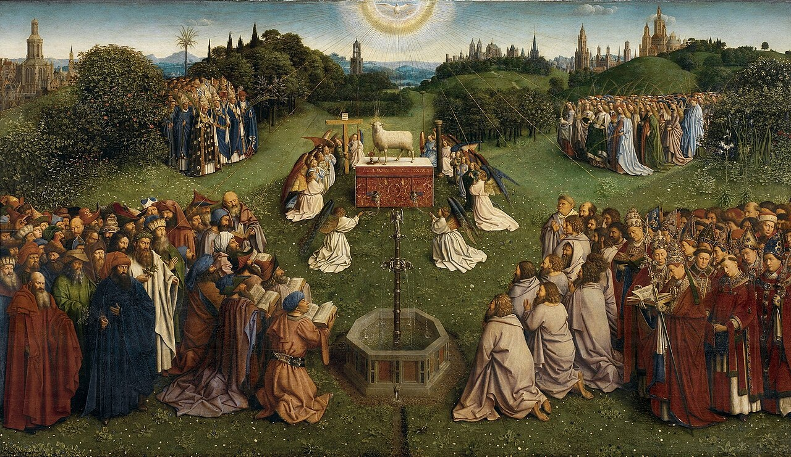
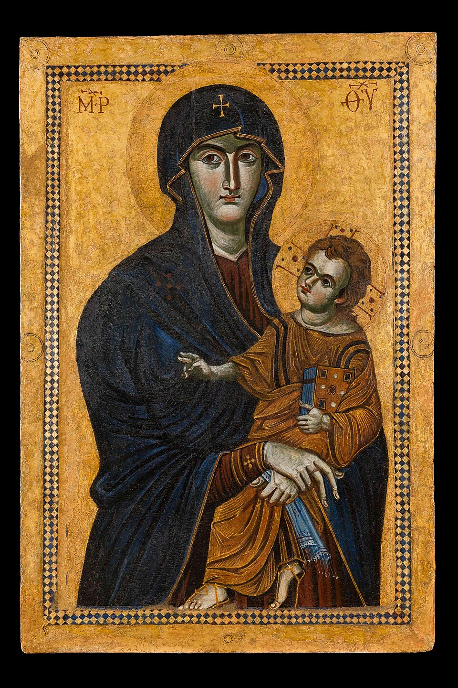
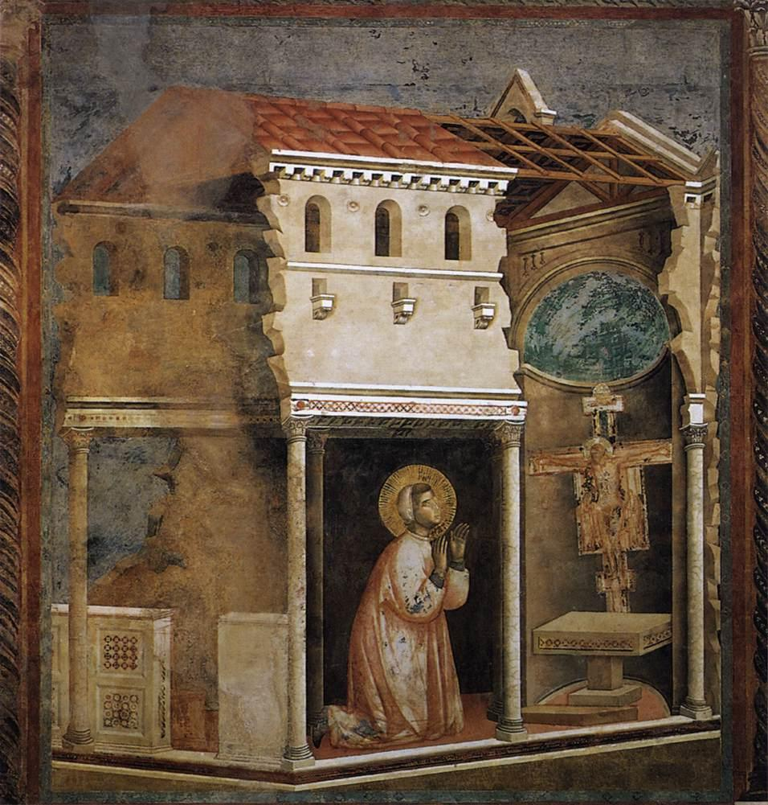
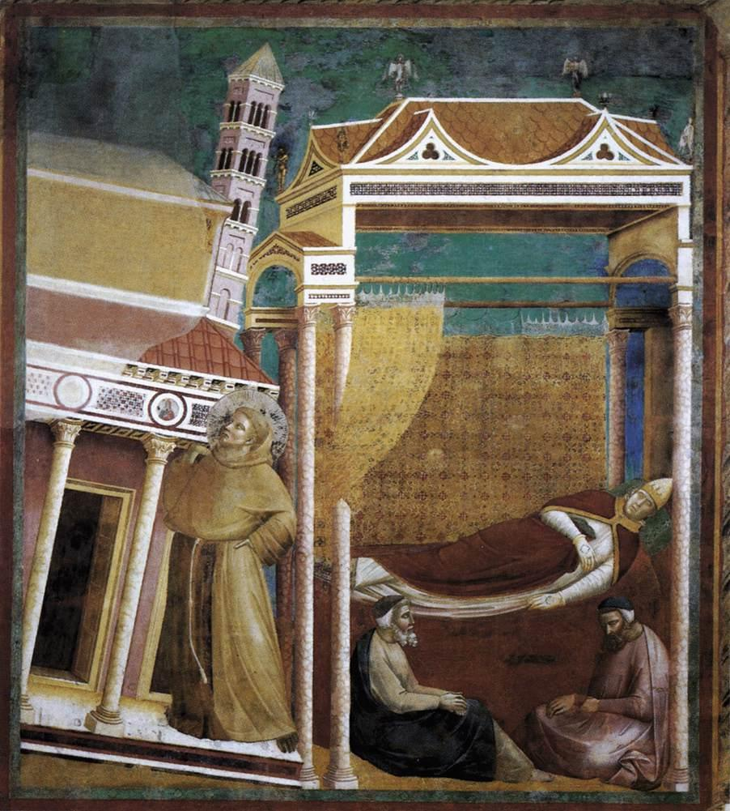
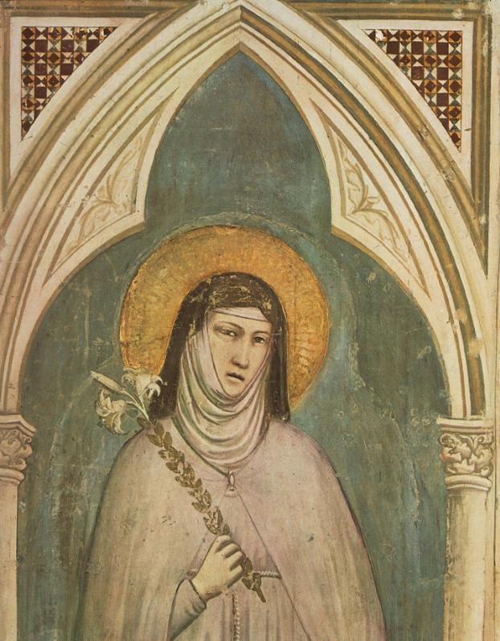
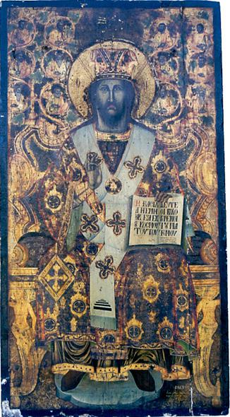
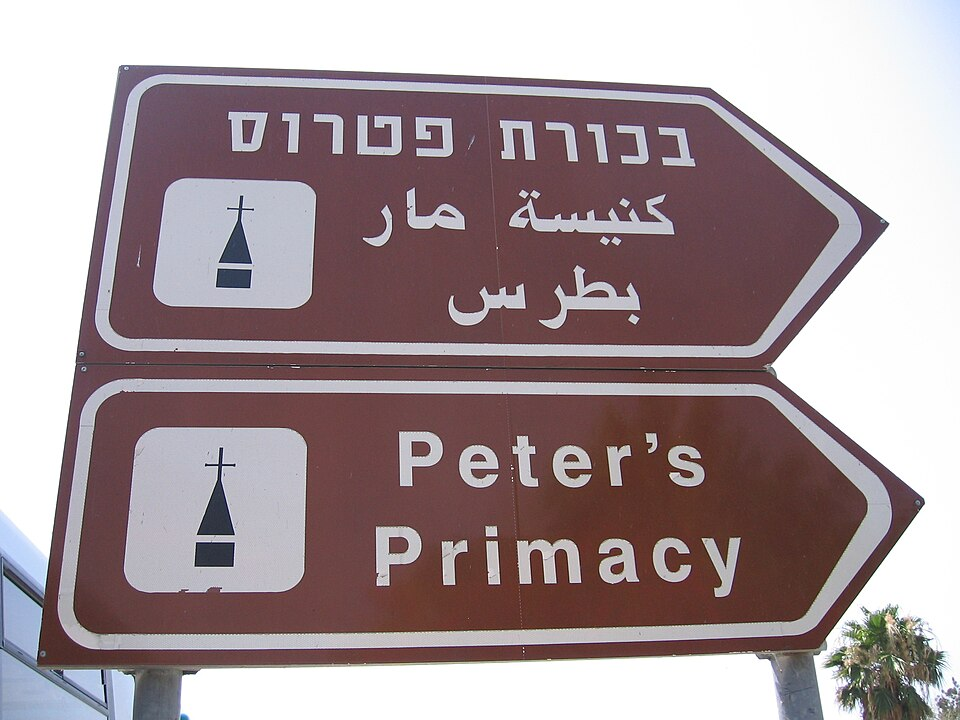
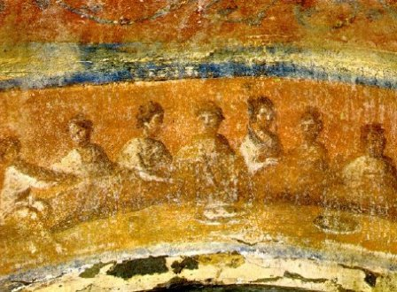
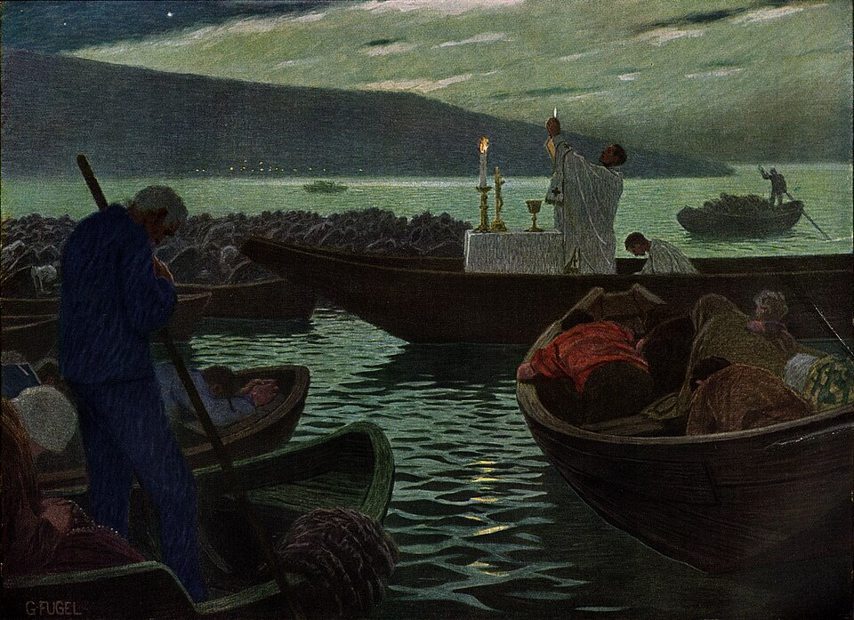
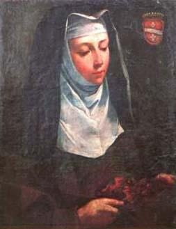

Kommt zur Hochzeit!
Selig, die zum Hochzeitsmahl des Lammes geladen sind. (Offb 19,9)
Das Himmelreich ist gleich einem König, der seinem Sohne Hochzeit hielt. Er sandte seine Knechte aus, um die zur Hochzeit Geladenen zu rufen; aber sie wollten nicht kommen. Wiederum schickte er andere Knechte aus und sprach: Sagt den Geladenen: Seht mein Mahl habe ich bereitet, meine Ochsen und das Mastvieh sind geschlachtet und alles steht bereit. Kommt zur Hochzeit! Sie aber kümmerten sich nicht darum und gingen ihre Wege, der eine auf seinen Acker, der andere zu seinem Geschäft. Die übrigen ergriffen seine Knechte, behandelten sie schmählich und ermordeten sie. Als dies der König hörte, wurde er zornig, schickte seine Heere aus, ließ jene Mörder umbringen und ihre Stadt in Brand stecken. Dann sprach er zu seinen Knechten: Das Hochzeitsmahl ist zwar bereitet, aber die Geladenen waren nicht würdig. Geht also hinaus an die Straßenecken und ladet zur Hochzeit, wen ihr findet. Seine Knechte gingen hinaus auf die Straßen und brachten alle zusammen, die sie fanden, Gute und Böse, und der Hochzeitssaal füllte sich mit Gästen. Nun kam der König herein, um sich die Gäste anzusehen. Da erblickte er dort einen Mann, der kein hochzeitliches Kleid anhatte. Und er sprach zu ihm: Freund, wie bist du hereingekommen, ohne hochzeitliches Kleid? Dieser aber verstummte. Da sprach der König zu den Dienern: Bindet ihm Hände und Füße und werft ihn hinaus in die äußerste Finsternis! Da wird Heulen und Zähneknirschen sein. Denn viele sind berufen, wenige aber auserwählt. Mt 22,1-14
Diese Broschüre der Marianischen Priester- und Laienbewegung stellt die Heilige Kirche als Braut Christi vor: das Gleichnis Jesu vom königlichen Hochzeitsmahl, das Geheimnis der dreifachen heiligen Kirche, das bräutliche Leben zahlreicher Heiliger sowie die Heilige Messe als Sonne und Hochzeitsmahl unseres Lebens – mit Zeugnissen der Gnade und der Verfolgung der Kirche in unserer Zeit.
Inhalt
- Geleitwort
- Das Mysterium der dreifachen heiligen Kirche
- Hochzeitliche Sehnsucht
- Komm, ich will dir die Braut zeigen! (Offb 21,9)
- Die Heilige Messe – die Sonne unseres Lebens
- Kommt zur Hochzeit!
- Die Tränen der Mutter
- Ein stiller Führer zum katholischen Glauben
- Die Fische im Netz der Kirche
- Die verfolgte Kirche
- Die Bekehrung eines Schauspielers
- Der Göttliche Stern und die bräutliche Seele
- Gebet um geistliche Berufe
Geleitwort
Gott erdachte für die Menschen nur einen einzigen Weg zur ewigen Seligkeit, und dieser ist der Weg, der Jesus Christus, der Menschgewordene Sohn Gottes, selber ist. Er sagte: Niemand kommt zum Vater außer durch Mich. Ich bin der Weg. (Joh 14,6) Jesus hat uns diesen Weg bereitet durch die liebevolle Hingabe Seines Lebens am Kreuz als Ausdruck höchster Liebe und Verherrlichung des Vaters (vgl. Joh 17,1-5) und als Sühnopfer von lieblichstem Wohlgeruch für die Erlösung der Menschen (vgl. Eph 5,2). Als einziger und Ewiger Hoherpriester der Menschheit hat Christus das Opfer Seiner Liebeshingabe am Altare des Kreuzes im Geheimnis der Eucharistie wirklich und wesenhaft Seiner Kirche hinterlassen. Dabei hat Christus die Vergegenwärtigung Seines Kreuzesopfers unzertrennlich mit Seinem Hochzeitsmahl verbunden. Dieses Hochzeitsmahl feiert Er in der Darreichung Seines Fleisches und Blutes an Seine Braut, die Kirche, und an jede gläubige und liebende Seele. Die größte Liebestat in der ganzen Schöpfungs- und Menschheitsgeschichte ist die priesterliche Hingabe Jesu Christi am Kreuz. Sie wird hier auf Erden im Sakrament der Eucharistie bis zu Seiner Wiederkunft gefeiert.
Selig, die zum Hochzeitsmahl des Lammes geladen sind. (Offb 19,9) Diese Worte offenbaren den tiefsten Sinn des Zieles, für das Gott die Menschen erschaffen hat. Er hat sie erschaffen, um sie teilhaben zu lassen an Seinem eigenen göttlichen Leben, und dieses Leben ist das übernatürliche, ewige Leben. Die Teilhabe am göttlichen Leben bedeutet höchste Glückseligkeit und Freude, dafür steht das Bild des Hochzeitsmahles. Es ist die beseligende Anschauung des unaussprechlichen und unfassbaren Wesens Gottes selbst. Das ewige Leben ist ein Leben innigster Einheit des Geschöpfes mit seinem Schöpfer. Gott ist die Liebe (1 Joh 4,8), und deshalb kann man nur liebend mit Ihm eins sein. Die ewige Glückseligkeit im Himmel ist die höchst mögliche Erfüllung des ersten und wichtigsten Gebotes, nämlich, Gott aus ganzem Herzen, aus ganzer Seele, mit ganzem Verstand und mit aller Kraft zu lieben. (vgl. Deut 6,4-5; Mk 12,30)
Diese Liebestat ist so gewaltig, dass sie für die ganze Ewigkeit als Erinnerung und als himmlische Liturgie bestehen wird, wie es uns die Geheime Offenbarung im Bild des Hochzeitsmahles des Lammes verkündet. Deswegen bleibt Christus auch im Himmel für alle Ewigkeit Hoherpriester. (vgl. Hebr 7,24)
Jesus Christus, der Ewige Hohepriester, ist der einzige Weg zur ewigen Glückseligkeit. Allerdings hat Er diesen Weg unzertrennlich mit der Wahrheit verbunden, denn Er selbst ist die Wahrheit. (vgl. Joh 14,6) Für das Zeugnis („martyrein“ im Griechischen) der Wahrheit ist Er in die Welt gekommen (vgl. Joh 18,37) und Er ist der Zeuge („martys“ im Griechischen), der Treue („fidelis“) und der Wahre („verus“) in Person. (vgl. Offb 3,14) Daraus erkennen wir, dass der Weg zur ewigen Glückseligkeit, zum Hochzeitsmahl des Lammes, ein Weg unbedingten Glaubens und Festhaltens an der Wahrheit, selbst bis zum Martyrium, bedeutet. Ohne den Glauben, d. h. des treuen Festhaltens an den von Gott geoffenbarten Wahrheiten, ist es unmöglich Gott zu gefallen (vgl. Hebr 11,6), d. h. unmöglich in den Himmel zu kommen.
Nichts ist dem Sinn Jesu Christi und dem Evangelium fremder, als das Christentum und den Weg zum Himmel als einen sentimentalen, nach individueller Vorliebe gestalteten Spaziergang oder als ein üppiges à la carte Menü zu verstehen oder zu leben. Solch ein Christentum wäre ohne Kreuz, ohne Opfer, ohne Gehorsam gegenüber dem klaren Willen Gottes, ohne Selbstverleugnung. Es wäre folglich ein Christentum ohne wahre übernatürliche Liebe, und deshalb ohne wahre Freude, ohne ein wahres Hochzeitsmahl des Lammes, weil ja das Lamm wesensmäßig ein unschuldig geopfertes Wesen ist. Solch ein Christentum wäre eine Illusion. Es wäre ein Christentum des „Ego“, und deshalb der größte Gegensatz zu Christus selbst und zum wahren Christentum, also dessen hässlichste Karikatur.
Die Kirche war sich seit ihren Anfängen der Gefahr bewusst, die solch ein illusionäres und karikaturartiges Christentum ohne Kreuz und ohne Wahrheit, und folglich auch ohne Liebe, bedeutet. Deshalb haben sich die ersten Christen und seither alle Generationen der wahren katholischen Gläubigen diese Worte des Apostels Judas (Thaddäus) stets zu Herzen genommen: Kämpft für den Glauben, der den Heiligen ein für allemal überliefert ist. Seid eingedenk dessen, was die Apostel unseres Herrn Jesus Christus vorausgesagt haben. Sie haben euch gesagt, dass am Ende der Zeit Spötter auftreten werden, die nach ihren gottlosen Begierden wandeln. Sie sind es, die Spaltungen hervorrufen, – irdisch Gesinnte, ohne Geist! Ihr aber, Geliebte, erbaut euch an eurem hochheiligen Glauben, betend im Heiligen Geist! Bewahrt euch in der Liebe Gottes in Erwartung des Erbarmens unseres Herrn Jesus Christus zum ewigen Leben! Erbarmt euch der Zweifelnden, entreißt sie dem Feuer und rettet sie. (Jud 3,17-23)
Die größte und wirksamste Hilfe auf dem langen, mühesamen und gefahrvollen Weg zur ewigen Glückseligkeit ist Jesus Christus selbst, und zwar mit dem Geschenk des Heiligen Messopfers, der wahren Gegenwart Seines Kreuzesopfers und der Speise Seines Leibes und Blutes. Das ist der größte Schatz, die wahre geistige Sonne der Kirche. Ja, das ist schon hier im Tal der Tränen eine Vorwegnahme des Hochzeitsmahles des Lammes im ewigen Leben.
Das Heilige Messopfer und die Heilige Kommunion sind auch die wirksamsten Mittel, damit die Seele in der wahren ewigen Liebe zu Gott, in der bräutlichen Liebe zu Ihm wächst. Und das bedeutet wiederum nichts anderes als Heiligkeit des Lebens.
Gott hat es gewollt, dass das Kreuzesopfer mit der Wesensverwandlung des Brotes und des Weines in den Leib und das Blut Christi nur die Priester sakramental vollziehen können. Ohne Priester gibt es kein Messopfer und keine Heilige Kommunion, und folglich erlischt dann die wahre geistige Sonne im Leben der Kirche. Allerdings brauchen wir nicht nur Priester, sondern vor allem heiligmäßige Priester. Christus, der keusche, wahrhafte und barmherzige Ewige Hohepriester will auch in unserer so dunklen und wirren Zeit in Seinen Priestern wieder durch unsere Straßen gehen, die Wahrheit Irrenden und Zweifelnden lehrend, Leidende tröstend, die Vergebung der Sünden reuigen Sündern spendend, und vor allem das Messopfer darbringend. Deshalb sollen die Priester, Seine menschlichen Werkzeuge, auch keusch, opferbereit, demütig sein und stets für die Wahrheit Zeugnis ablegen, selbst bis zum Martyrium.
Die Erinnerung an die Wahrheit von der Berufung aller Christen zur Heiligkeit, und in erster Linie der Priester, der zentralen Bedeutung der Heiligen Eucharistie im Leben der Kirche durch eine immer tiefere gläubige Durchdringung der Wahrheit und der Göttlichen Majestät angemessen und sakral gefeiertem Heiligen Messopfers mit dem fruchtbaren und ehrfürchtigem Empfang der Heiligen Kommunion, mit einem reinen, gläubigen und demütigen Herzen: darin hätte ja die eigentliche Bedeutung und das Ziel des Zweiten Vatikanischen Konzils gemäß der Absicht der meisten Konzilsväter bestehen sollen.
Nur die wahre Erneuerung aus dem Geheimnis der Eucharistie gemäß dem beständigen Sinn der Kirche und aller Heiligen, wird in der Kirche unserer Tage Heilige hervorbringen: heilige Kinder, heilige Jugendliche, heilige Familien, heilige gottgeweihte Bräute Christi, heilige Ordensleute und vor allem heilige Priester. Erst dann wird der Kirche ein wahrer geistiger Frühling geschenkt. Auf diesen Frühling hoffen wir fest und er ist schon vorhanden auch in unseren Tagen, beginnend zunächst in den Seelen, die Christus innig bräutlich lieben, und die den Eucharistischen Christus zur Mitte ihres Lebens gemacht haben.
Das vorliegende Büchlein „Kommt zur Hochzeit!“ wird ohne Zweifel eine konkrete geistliche Hilfe sein zu der so ersehnten wahren eucharistischen Erneuerung der Kirche und vielen Seelen Licht, Trost und Ansporn zur Gottes- und Nächstenliebe und zur Heiligkeit geben.
Gott segne die Verbreitung dieses kleinen wertvollen Büchleins mit vielen geistlichen Früchten!
Mögen wir vereint mit der lieben Gottesmutter Maria, dem ersten Tabernakel des menschgewordenen Heilandes, öfters die folgenden Worte eines alten bekannten Kommunionliedes wiederholen, welche in uns den Glauben und die übernatürliche Liebe zu unserem Eucharistischen Herrn vermehren mögen:
Jesus, Jesus, komm zu mir, o, wie sehn ich mich nach Dir!
Meiner Seele bester Freund, wann werd ich mit Dir vereint!
Tausendmal begehr ich Dein, Leben ohne Dich ist Pein.
Tausendmal seufz ich zu Dir: O Herr Jesus, komm zu mir!
Keine Lust ist in der Welt, die mein Herz zufriedenstellt.
Deine Liebe, Herr, allein kann mein ganzes Herz erfreun!
Zwar bin ich, o Herr, nicht rein, dass Du kehrest bei mir ein;
doch ein Wort aus Deinem Mund und die Seele wird gesund.
Innig sehn ich mich nach Dir, Jesus, Jesus, komm zu mir!
Nimm mein ganzes Herz für Dich und besitz es ewiglich. Amen.
Gottes reichen Segen den Verfassern, Verbreitern und Lesern dieses Büchleins!
29. Juni 2019, am Hochfest der Apostelfürsten Petrus und Paulus
+ Athanasius Schneider, Weihbischof der Erzdiözese der Heiligen Maria in Astana (Nur-Sultan)
Das Mysterium der dreifachen heiligen Kirche
Die dreifache heilige Kirche besteht aus der streitenden, leidenden und triumphierenden Kirche. Die Christen auf Erden sind die streitende Kirche, die Seelen im Fegefeuer die leidende und die Seligen im Himmel die triumphierende. Alle drei zusammen bilden durch ihre innige Verbundenheit mit Christus das Gottesreich. Im Credo nennen wir diese Gemeinschaft „Gemeinschaft der Heiligen“, weil alle durch die heiligmachende Gnade mit Christus, ihrem Bräutigam, verbunden sein sollen.1
Die Gemeinschaft der Heiligen auf Erden lässt uns Anteil haben an allen Gnadenschätzen der Kirche. Die Vereinigung mit den Heiligen im Himmel bringt uns Anteil an ihren Verdiensten und Hilfe durch ihre Fürbitte bei Gott. Die Gemeinschaft mit dem Fegefeuer ist für uns und für die Armen Seelen, die so überaus schmerzlich leiden, eine große Hilfe. Durch Heilige Messen, Ablässe, Gebete und gute Werke, die wir für sie aufopfern, können wir ihre Peinen abkürzen und sie wiederum zeigen uns ihre große Dankbarkeit, indem sie den Himmel bestürmen in all unseren Anliegen.2
1 Dass Christus der Bräutigam der Kirche ist, wurde von den Propheten angedeutet, und Johannes der Täufer verkündete es. Der Herr selbst hat Sich als „der Bräutigam“ bezeichnet. (Mk 2,19) Zugleich ist Er auch, wie der Apostel Paulus betont, »das Haupt des Leibes, der Kirche«, »die Er geliebt und für die Er Sich hingegeben hat.« (Kol 1,18; Eph 5,25) Ebenso stellt der Apostel die Kirche und jeden Gläubigen, der Glied des Leibes Christi ist, als eine Braut dar, die er Christus dem Herrn „verlobt“ hat, damit sie ein Geist sei mit Ihm. (vgl. 1 Kor 6,15-17; 2 Kor 11,2) (vgl. KKK 796)
2 Die Armen Seelen gehören zu den tiefsten Kennern irdischer Not und menschlichen Daseins. Da sie in einer uns noch nicht zugänglichen Gotteserfahrung leben, sind sie von Liebesgewalt zu uns erfüllt und besonders den Menschen die treuesten Freunde, die ihnen durch Gebet und Opfer den Weg zur Gottesschau verkürzen. (Hl. John Fisher)
Wir wollen uns freuen und jubeln und Ihm die Ehre erweisen.
Denn gekommen ist die Hochzeit des Lammes und Seine Frau hat sich bereit gemacht.
Sie durfte sich kleiden in strahlend reines Leinen.
Leinen bedeutet die gerechten Taten der Heiligen.
Jemand sagte zu mir: „Schreib auf: Selig, die zum Hochzeitsmahl des Lammes geladen sind.“3 Offb 19,7-9
3 Wir können unser Heil nicht anders erlangen als im mystischen Leib der Kirche, dessen Haupt Christus ist und dessen Glieder wir sind. […] Es gibt keinen anderen Weg und keine andere Pforte für uns. (Hl. Caterina von Siena)
Hochzeitliche Sehnsucht
Die ganze Heilige Schrift ist durchdrungen vom Pulsschlag der sehnsüchtigen Liebe Gottes, die immerzu an die oft so verhärteten und verschlossenen Herzen der Menschenkinder pocht, um sie voll Erbarmen an Sich zu ziehen. Diese bräutliche Liebe offenbart Sich besonders eindrücklich im Bild der Hochzeit, die Gott schon im Alten Testament vorbereitete und die durch Jesus Christus, der als Messias und Bräutigam in diese Welt gekommen ist, in einem wunderbaren Tausch der Liebe feierlich vollzogen wurde.
Ich traue dich Mir an auf ewig; Ich traue dich Mir an um den Brautpreis von Gerechtigkeit und Recht, von Liebe und Erbarmen, Ich traue dich Mir an um den Brautpreis Meiner Treue: Dann wirst du den Herrn erkennen. Hos 2,21-22
Hochzeit ist das tiefste Geheimnis der ganzen sichtbaren und unsichtbaren Schöpfung und somit auch das tiefste Geheimnis der Kirche, die ihrem Bräutigam durch den Pilgerweg dieser Zeit mit hochzeitlichem Sehnen entgegengeht.
Schmerzlich bewegt von den schweren Bedrängnissen, die unsere Mutter Kirche von innen und außen bedrohen und sie tief verwunden, wollen wir mit dieser kleinen Broschüre Feuerfunken der Sehnsucht nach der himmlischen Hochzeit in viele Menschenherzen werfen, damit ihre Liebe zu Christus im Geheimnis Seines mystischen Leibes wieder neu entfacht werde und sie mit brennenden Lampen dem Bräutigam und der Braut entgegengehen. (vgl. Mt 25,1-13)
Eine unzählige Schar von Heiligen ist auf diesem Weg zur himmlischen Hochzeit bereits zur Vollendung gelangt und bittet jetzt für uns am Throne Gottes, dass auch wir einmal in diesen großen Festsaal der ewigen Freude des Himmels kommen dürfen.
Wenn wir einen Blick in das Leben der Heiligen werfen, so werden wir hineingenommen in eine Atmosphäre der göttlichen Gnade, die diesen in Gott verliebten Seelen förmlich aus den Augen strahlt. Sie haben sich vom bräutlichen Geheimnis der Liebe Gottes völlig verwandeln lassen und sind in eine solche Glückseligkeit eingetaucht, von der die irdisch gesinnte Welt nicht einmal etwas erahnt.
In den folgenden Kapiteln nehmen uns einige dieser leuchtenden Feuersäulen der Kirche mit auf den Weg zu Gott, für dessen Ehre und das Heil der Seelen sie sich völlig verzehrt haben.

Maria, Mutter der Kirche
Komm, ich will dir die Braut zeigen! (Offb 21,9)
Maria, Mutter der Kirche, Dein sind wir für Zeit und Ewigkeit.
Durch Dich und mit Dir, wollen wir jetzt und für immer ganz Jesus gehören. Amen.
4 Maria als Mutter und Schutzherrin der Kirche und der Heiligsten Eucharistie, sowie als Königin der Engel. Umgeben von den sieben Erzengeln steht Maria im Schiff der Kirche vereint mit allen Gläubigen im Kampf um die Rettung der Seelen vor dem bösen Feind. Die heiligen Engel und die Heiligen des Himmels bilden gemeinsam mit den treuen Gläubigen der Kirche das Reich Mariens zur Vorbereitung auf den endzeitlichen Sieg Christi auf Erden. (Ölgemälde von Roswitha Bitterlich)

Franziskus betet vor dem Kreuz in San Damiano.
Der heilige Franziskus und die verwundete Braut
Als der hl. Franziskus von Assisi (1181/82 – 1226) eines Tages vom Geiste geführt in das Kirchlein von San Damiano eintrat, um zu beten, da wurde er von ungewohnten Heimsuchungen des Geistes getroffen und alsbald sprach zu ihm das Bild des gekreuzigten Christus, wobei sich die Lippen auf dem Bild bewegten. Es rief ihn beim Namen und sprach: Franziskus, geh hin und stell Mein Haus wieder her, das, wie du siehst, ganz verfallen ist! […] Von jener Stunde an, da der Geliebte mit ihm geredet hatte, durchbohrte seine heilige Seele das Mitleiden mit dem Gekreuzigten. […] Daher konnte er von jener Stunde an das Weinen nicht mehr zurückhalten. […] Mit seinem Schluchzen erfüllte er die Wege, keine Tröstung ließ er aufkommen, wenn er an die Martern Christi dachte. (2 C 10-11)
Die Sendung, die Franziskus vom Kreuze her erhielt: Siehe, Mein Haus zerfällt, geh', bau es wieder auf!, ist ein göttliches Offenbarungswort, in dem das ganze Geheimnis des hl. Franziskus enthalten ist. Dieses Geheimnis empfängt er in San Damiano noch verschlossen wie die Knospe einer kostbaren Blüte. Im Kirchlein von Portiuncula wird sich ihm die Blüte erschließen.
Franziskus und die Armut
Im Kirchlein von Portiuncula5 wurde im Jahre 1209 das Evangelium verlesen, wie der Herr Seine Jünger in gänzlicher Armut zum Predigen aussandte. (vgl. Mt 10,5-16) Da frohlockte der hl. Franziskus sogleich im Geiste Gottes und sprach: Das ist's, was ich will, das ist's, was ich suche, das verlange ich aus innerstem Herzen zu tun. (1 C 22)
Die Sendung, die in San Damiano bis in seinen Lebensgrund eingesenkt wurde, erschließt sich ihm hier in Portiuncula im hellsten Licht: Er soll nicht nur Häuser aus Stein bauen; die lebendige Kirche Jesu soll er zur Reinheit und Kraft zurückführen, in der sie die Apostel gegründet haben. Darum muss er selbst so leben wie die Apostel. Was er schon immer aus innerstem Herzen suchte, erhält jetzt die Gestalt der verheißenen Braut. Er hat sie gefunden, edler, reicher und schöner, als ihr je eine gesehen habt. (3 Gef 7) Jesus vertraut ihm Sein Größtes und Heiligstes an: die Kirche, Seine Braut. Haus, Stadt, Jerusalem, Zion, Kirche, es sind alles Namen der Braut. (vgl. Offb 21,2) Franziskus soll sie so lieben, wie Christus sie geliebt hat: in ihren Sünden und Wunden. Siehe, sie zerfällt. Dieses Wort rührt die ganze Seele des hl. Franziskus an. Christus lebt in ihm Sein Leben als Bräutigam und nimmt ihn ganz zu Sich ans Kreuz. Jesus verwundet ihn mit der Wunde Seiner eigenen Liebe; er soll es „sehen“, mit welchem Aussatz die Braut, die ganze verlorene Schöpfung, geschlagen ist, welche Wunden sie im Leibe Christi aufreißt und mit welcher Liebe ihr Bräutigam in ihre Armut hinabsteigt, um ihren Aussatz zu küssen und sie zu ihrem Adel zurückzuführen.
Hier entdeckt er die Armut als Geheimnis der Brautschaft. Er kann die Kirche nur dann in die Arme des Gekreuzigten zurückführen, wenn er so arm ist wie der Bräutigam selber. Und somit ist hier im Kirchlein von Portiuncula der Ursprung der franziskanischen Armut. Franziskus verlobt sich mit der Braut Armut.
5 Der Name „Portiuncula“ bedeutet „das kleine Teilchen“, „die kleine Portion“. Die Legende sagt, ein Pilger habe Erde vom Heiligen Land mitgebracht und mit dieser Erde eine Fläche im Wald vor Assisi umstreut, soweit die Erde ausreichte. Diese Fläche habe er Maria geweiht und ihr darauf eine Kapelle gebaut. Es sprach sich im Volk herum, die Engel sängen dort das Marienlob, man habe es oft gehört. Diesen Ort gewann der Heilige vor allen anderen lieb, ihn befahl er den Brüdern in besonderer Ehrfurcht zu halten. […] Der glückselige Vater erzählte, ihm sei von Gott geoffenbart worden, dass die selige Jungfrau unter den anderen ihr zu Ehren auf der Welt erbauten Kirchen diese Kirche mit besonderer Liebe liebe, daher liebte auch der Heilige sie mehr als alle anderen. (2 C 18-19)
Und der Herr gab mir in den Kirchen einen solchen Glauben, dass ich in Einfalt so betete und sprach: „Wir beten Dich an, allerheiligster Herr Jesus Christus, hier und in allen Deinen Kirchen, die auf der ganzen Welt sind und preisen Dich, weil Du durch Dein heiliges Kreuz die Welt erlöst hast.“ (Hl. Franziskus)
O wunderbare Hoheit und staunenswerte Herablassung! O erhabene Demut! O demütige Erhabenheit, dass der Herr des Alls, Gott und Gottes Sohn, Sich so erniedrigt, dass Er Sich zu unserem Heil unter der anspruchslosen Gestalt des Brotes verbirgt. Daher bitte ich euch alle, mit der ganzen Liebe, deren ich fähig bin, dass ihr alle Ehrfurcht und alle Ehre, soviel auch immer ihr könnt, dem heiligsten Leib und Blut unseres Herrn Jesus Christus erweist. (Hl. Franziskus)
Franziskus und die Keuschheit
Das Brautgeheimnis von Portiuncula wird uns noch tiefer enthüllt im Portiuncula-Ablass.
In einer Winternacht war Franziskus von heftigsten Versuchungen gegen die Keuschheit befallen. Die Versuchung war so stark, dass Franziskus in die kalte Nacht hinaustrat, sich nackt auszog und sich in die Dornen eines Rosenstrauches warf. So wurde er der Versuchung Herr. Auf diesen Sieg der Treue erschienen ihm zwei Engel, die ihn einluden, mit ihnen zur Portiuncula-Kapelle zu kommen, durch deren Fensterchen helles Licht strahlte. Als er eintrat, sah er über dem Altar Christus und Maria, umgeben von den Chören der Engel. Er wirft sich nieder auf die Knie, und Jesus bietet ihm an, er könne einen Wunsch aussprechen und diesen Maria übergeben. Er erfleht, dass jeder, der das Kirchlein von Portiuncula gläubig betritt, Nachlass aller Sünden und Sündenstrafen erhalte. Und Maria nimmt die Bitte auf und bringt sie in ihrem bräutlichen Herzen Jesus dar. Jesus gewährt sie ihr mit dem Hinweis an Franziskus, diesen Ablass von Seinem Stellvertreter auf Erden, dem Papst, bestätigen zu lassen. Papst Honorius, der zu dieser Zeit in Perugia weilte, gewährte den Ablass.
Doch welchen geistlichen Hintergrund hat jene heftige Versuchung und der Sieg in den Dornen des Rosenstrauches, der nach diesem Kampf um die Reinheit alle Dornen verlor und mitten im Winter voller Blüten stand?
Franziskus soll die Kirche aus der Sünde zur bräutlichen Blüte zurückführen; herrlich, ohne Flecken oder Runzeln oder dergleichen, heilig und makellos soll sie sein. (Eph 5,27) Wie kann er diesen Auftrag ausführen, wenn er sich nicht selbst in den heftigsten Versuchungen rein bewahrt, und auch nur mit dem kleinsten Schatten des Begehrens die ihm anvertraute Braut verletzt?
Gott hat im Paradies die Urfeindschaft zwischen der Schlange und der das Kind gebärenden Frau aufgedeckt. (vgl. Gen 3,15) In dieser Urfeindschaft wütet der Teufel, der Hasser und Vernichter der Vermählung Gottes mit der Schöpfung, gegen den aus allen anderen auserwählten Brautführer Franziskus. Es sind weltgeschichtliche Schlachten, die dieser in seinem Fleisch mit dem Teufel austrägt und gewinnt. Er ist der Drachentöter, der weiß, aus welcher Gefahr er die Jungfrau erretten muss. (vgl. Offb 12,1ff.) Immer wieder klingt es in seinen Schriften wie ein Schrei aus seinem Herzen: Und hassen wollen wir unseren Leib mit seinen Lastern und Sünden; denn durch ein fleischliches Leben will er uns die Liebe unseres Herrn Jesus Christus und das ewige Leben rauben und sich selbst mit allen in die Hölle stürzen. (Erm 22)
Es sind die Tränen Jesu über Jerusalem, die in den wunden Augen des hl. Franziskus blutig werden: Wenn du doch heute erkennen würdest, was dir zum Frieden dient! (Lk 19,42) Hier, im Kirchlein von Portiuncula, sollen die Menschen erkennen und umkehren! Wenn Franziskus unzählige Menschen durch alle Jahrhunderte hindurch zum christlichen Leben führt, ist es die Frucht seines Büßens und Weinens.6 Gott hat durch Franziskus in einem Höhepunkt der Geschichte das Offenbarungswort von der Hochzeit erschlossen. Er ist der Herold, den der Hohepriester vom Kreuzesbrautthron her aussendet, um alles zur Königshochzeit einzuladen, damit die ganze Schöpfung heimgeführt und im Blute Christi vermählt werde. (vgl. Eph 1,10; Kol 1,16-20) Diese Vermählungsfeier des Opfertodes Christi begeht die Kirche in jeder Hl. Messe. Nehmet hin und esset – das ist Mein Leib, das ist Mein Blut.
Im Sterben neigte Er Sein Haupt zu Maria und Johannes, der bräutlichen Kirche, und übergab ihr Seinen Geist. Zugleich floss aus Seinem Herzen Blut und Wasser. So schenkte Er der Kirche, Seiner geliebten Braut, Sein Leben und alle Seine Erlöserverdienste, damit sie durch Taufe und Eucharistie die Mutter aller Lebendigen werde.
6 Je mehr in der heutigen Welt viele Menschen ein Leben in vollkommener Enthaltsamkeit für unmöglich halten, umso demütiger und beharrlicher werden die Priester und mit ihnen die ganze Kirche die Gabe der Beständigkeit und Treue erflehen, die denen niemals verweigert wird, die um sie bitten. Zugleich werden sie alle übernatürlichen und natürlichen Hilfen anwenden, die jedem zur Verfügung stehen. (Aus dem II. Vatikanischen Konzil, Priest. 16)
Franziskus erkannte, wie aus der Herzenswunde Jesu das himmlische Jerusalem hervorging, die Kirche mit ihren Sakramenten und priesterlichen Ordnungen, wie Eva aus der Seite Adams. Er sah, wie jede Blume, jeder Stein, jeder Wurm, jede Wolke am Himmel, jeder Stern, wie alles der aus dem Blute Jesu gebildete Brautschmuck ist. Jedes Blümchen ist gewoben aus der Liebe des göttlichen Bräutigams zu Seiner Braut, die Er beschenken will.
In dieser leibhaftigen Hingabe Jesu an Seine Braut gründet die christliche Ehe. (vgl. Eph 5,22-32) Darum ist sie ein Sakrament. In der Trauungsfeier werden die Brautleute in ihrem Mann- und Frau-Sein vom Heiligen Geist priesterlich geweiht, so dass ihre eheliche Liebe die Heiligungskraft der Liebe Christi erhält.
Papst Johannes Paul II. sprach in seinen öffentlichen Audienzen häufig vom bräutlichen Geheimnis des Leibes. Wir übermitteln durch den Leib uns selbst, entweder in der Sünde oder in der Heiligkeit. Darum ist jede geschlechtliche Gemeinschaft, die nicht in der Heiligkeit des Sakramentes geschieht, Unzucht: Zwei erfüllen sich gegenseitig in ihrem Mann- und Frau-Sein mit ihrer Sünde und entweihen den Tempel Gottes; sie schänden die himmlische Hochzeit, die in der Taufe begonnen hat. (vgl. 1 Kor 6,15-20)
Unser Leib soll eine heilige und Gott wohlgefällige Opfergabe werden, (vgl. Röm 12,1) damit auch wir zu Christus liebend sagen können: „Das ist mein Leib für Dich!“

Papst Innozenz III. sieht im Traum einen Ordensmann, der die Kirche stützt.
Franziskus und der Gehorsam
Woher hat Franziskus seine tiefe Verehrung und seinen totalen Gehorsam zur Kirche, und zwar zur römischen Kirche? Wissend um die Spannung zwischen priesterlicher Vollmacht und persönlicher Heiligkeit schreibt er in seinem Testament: Danach gab mir der Herr einen so großen Glauben zu den Priestern, die nach der Form der heiligen römischen Kirche leben, auf Grund ihrer Weihe, dass ich, wenn sie mich verfolgen würden, bei ihnen Zuflucht suchen will. […] Und ich will in ihnen die Sünde nicht beachten, weil ich den Sohn Gottes in ihnen unterscheide und sie meine Herren sind. Und deswegen tue ich das, weil ich leiblich von Ihm, dem höchsten Sohn Gottes, in dieser Welt nichts sehe als Seinen heiligsten Leib und Sein heiligstes Blut, das sie selbst empfangen und sie allein den anderen darreichen. (Test. 6)
Da die Erneuerung der Kirche weitgehend von der Heiligung der Priester und Gottgeweihten ausgeht,7 lädt uns Jesus immer wieder ein, in diesem Anliegen zu beten und zu opfern. Zu Maria Sieler, einer Mystikerin unserer Zeit, die ein Sühneleben zur Erneuerung des Priestertums führte, sprach Jesus: Ich will die Priester teilnehmen lassen an Mir, will aus ihnen einen zweiten Erlöser und Heiland machen, um die leidende und gedrückte Menschheit wieder an Mich zu ziehen. Ich will ihr Leben sein, ganz mit ihnen eins werden, Mich ihnen mitteilen. Mein Herz soll ihr Herz werden. (19.8.1937)8
7 Die Heiligkeit der Priester trägt im höchsten Maß zur größeren Fruchtbarkeit ihres besonderen Dienstes bei. Denn obwohl die Gnade Gottes auch durch unwürdige Diener das Heilswerk durchführen kann, so will doch Gott Seine Heilswunder für gewöhnlich lieber durch diejenigen kundtun, die sich dem Antrieb und der Führung des Heiligen Geistes mehr geöffnet haben und darum wegen ihrer innigen Verbundenheit mit Christus und wegen eines heiligmäßigen Lebens mit dem Apostel sprechen können: »Nicht mehr ich lebe, sondern Christus lebt in mir.« (Gal 2,20) (Aus dem II. Vatikanischen Konzil, Priest. 12)
8 Josef Fiedler S.J., Erneuerung der Kirche – Maria Sieler, Imprimatur: Vindobonae, die 18.04.1988, Praep. Prov. Austria P. Josef Czerwinski S.J.
Ein guter Hirte, ein Hirte nach dem Herzen Gottes, das ist der größte Schatz den der liebe Gott einer Pfarrgemeinde gewähren kann und eine der kostbarsten Gaben der Göttlichen Barmherzigkeit. Hl. Pfarrer von Ars
In allen Priestern und Bischöfen und zusammenfassend im Papst, sieht Franziskus die priesterliche Gegenwart und Autorität des Bräutigams. Darin liegt das Geheimnis der hierarchischen Kirche in ihrem Lehr-, Hirten- und Priesteramt.
Jesus hat Seinen ganzen Gnadenschatz der Kirche anvertraut. Das geschah zeichenhaft, als der Leichnam Jesu vom Kreuz abgenommen und in den Schoß Mariens gelegt wurde; da hat sie in ihrem Schoß alle Gnaden empfangen, die Christus am Kreuz erworben hat.
An Pfingsten ward dieser Gnadenschatz dem Schoß der Kirche eingesenkt, und so wurde die Kirche mit Maria vereint. Den Schlüssel zu diesem Schatz hat Christus dem Petrus gegeben. Er kann auch für den Himmel gültig öffnen und schließen, binden und lösen, was sich besonders durch die Spendung der hl. Sakramente vollzieht. Auch durch den Ablass begnadet die Mutter Kirche in überschwänglicher Weise ihre Kinder und erlässt ihnen in der Vollmacht Jesu, was sie eigentlich noch büßen müssten. Denn wie Jesus in Seiner Menschwerdung ganz von Maria abhängig sein wollte, so will Er jetzt in Seinem Gnadenwirken ganz von der Kirche abhängig sein.
Heiliger Vater, bewahre sie in Deinem Namen, den Du Mir gegeben hast, damit sie eins sind wie Wir. Joh 17,11

Die heilige Klara von Assisi mit der Lilie (Fresko, Giotto)
Die Braut Klara (1193 – 1253)
Die hl. Klara von Assisi aus adeliger Familie geboren, gründete gemeinsam mit dem hl. Franziskus, von dem sie persönlich in San Damiano eingekleidet wurde, den Klarissenorden. Klara wird vierzig Jahre lang die Frau unter jenem Kreuze sein, das zu Franziskus in San Damiano gesprochen hat.
… in dieser engen Klausur zerbrach sie zweiundvierzig Jahre lang mit den Geißeln der Zucht das Alabastergefäß ihres Leibes, so dass das Haus der Kirche vom Duft der Salben erfüllt wurde. (LebKl 10)
So wird Klara zur lebendigen Deutung der Sendung, die Franziskus in San Damiano von Christus erhalten hat, Sein Haus wieder aufzubauen. In Klara wird die Kirche sichtbar, die Franziskus als heilige, reine Braut Christus zur Vermählung zuführen muss. Darum ist die Liebe des hl. Franziskus zu Klara die Liebe Christi zu Seiner Kirche.9
9 Vgl. Eugen Mederlet OFM, Die Hochzeit des Lammes, 1983, S. 96-133, Imprimatur: P. Karl Feusi OFM, Provinzial. Die franziskanischen Quellenschriften stammen aus Franziskus-Quellen, 2009 und Klara-Quellen, 2013.
Gebet für die heilige Kirche
Heiliger Franziskus, du machtvoller Fürsprecher an der Seite Jesu des Gekreuzigten in Seiner größten Barmherzigkeit. Wir erbitten deine Hilfe in unserer großen Not. Die wunderbare Schöpfung Gottes, die Welt, ja die ganze Menschheit und die heilige Kirche befinden sich in schwerster Bedrängnis.
Heiliger Franziskus, du feste Säule der katholischen Kirche, schon einmal hast du die wankenden Mauern der Kirche gestützt, wieder wird sie von allen Seiten bedroht. Erbitte uns die Einheit im Glauben, auf dass alle, die außerhalb der Kirche Jesu Christi stehen, ihre Zuflucht in den Armen Jesu finden. Dass sie den Heimweg erkennen, der sie hinführt zur Treue des Lehramtes, verankert im Felsenfundament des Papsttums und zur Teilhabe an den Verdiensten Jesu des Gekreuzigten mit dem Reichtum all Seiner Gnadenschätze.
Heiliger Franziskus, du Ebenbild der Passion Jesu, mit Seinen Wundmalen gezeichnet, stehe unseren Bischöfen und Priestern bei, dass sie als Beschützer und Verteidiger unseres Glaubens streiten, dem Irrtum entgegentreten und zur Ähnlichkeit mit dir gelangen. Amen.

Jesus Christus, der Ewige Hohepriester
Die heilige Birgitta von Schweden (1302/03 – 1373)
Der hl. Birgitta, der Patronin Europas, die zur Erneuerung des Klerus und der ganzen Kirche ein heroisches Opferleben führte, offenbarte Jesus immer wieder Seinen großen Schmerz, wegen des sittenlosen Lebens einiger Seiner Diener.
Einmal sagte Jesus zu Birgitta: Siehe, Meine Tochter, als Ich von der Welt schied, habe Ich Meinen Priestern das Mir am Teuersten anvertraut, und habe ihnen fünf Gaben hinterlassen. Erstens, Meinen Glauben; zweitens, die beiden Schlüssel zur Hölle und zum Himmel; drittens, die Kraft, aus einem Feinde Gottes einen Engel zu machen; viertens, die Gewalt, Meinen Heiligsten Leib zu konsekrieren, was kein Engel tun kann; fünftens, das Vorrecht, meinen Allerheiligsten Leib mit ihren Händen berühren zu dürfen. Jetzt aber verfahren sie mit Mir wie jene, die geleugnet haben, dass Ich den Lazarus von den Toten auferweckt hatte. […] So ähnlich machen es heute die Priester, wenn sie nicht Meine Worte reden und nicht Meine Lehre verkünden, sondern die Liebe zur Welt lehren und die Wollust predigen und es für nichts erachten, was sie an Sündenschuld auf sich geladen haben.
Diese Klage des Ewigen Hohenpriesters, durch eine Heilige den Priestern vermittelt, verfehlte ihre Wirkung nicht beim Klerus und Volke.
Wie sehr Er Seine Priester liebt und wie Er sie auserwählt hat, zeigen uns diese Worte an Birgitta: Ich habe die Priester vor allen Engeln und Heiligen auserwählt und ihnen allein die Vollmacht gegeben, Meinen Leib gegenwärtig zu setzen und zu berühren. […] Ich habe die Priester so lieb gehabt, dass Ich nur ihnen solche Ehre erweisen wollte und sie auf sieben Stufen zu Mir aufsteigen ließ. Sie sollten geduldig sein wie Schafe, standhaft wie eine Mauer von bestem Fundament, beherzt wie Krieger, klug wie Schlangen; schamhaft wie Jungfrauen, rein wie die Engel, von Liebe glühend wie eine Braut, die nach dem Gemach ihres Bräutigams verlangt.
In einer Offenbarung, die Birgitta von der Gottesmutter empfängt, wird der Papst darauf hingewiesen, über die Reinheit des Klerus zu wachen: Der Papst soll jedem Bischof befehlen, acht zu geben auf das Leben seiner Geistlichen, dass jedem, der sein Leben nicht bessern und nicht in Enthaltsamkeit verharren will, seine Pfründe völlig entzogen werden, weil es Gott lieber ist, dass an einem solchen Ort gar keine Messe gefeiert wird, als dass der Leib des Gottessohnes durch Hurenhände berührt wird.10
10 Gottes Nordlicht von Ferdinand Holböck, 1983, S. 293-295, 298, Imprimatur: Erzbischöfliches Ordinariat Salzburg, + Jakob Mayr, Weihbischof und Generalvikar.
Die heilige Caterina von Siena (1347 – 1380)
Die hl. Caterina von Siena, Kirchenlehrerin und Patronin Europas, war von einer ganz außergewöhnlichen Liebe zur Kirche beseelt. Wie ihre Zeitgenossin, die hl. Birgitta von Schweden, kämpfte auch sie unermüdlich mit den Waffen des Geistes um die Reform und Einheit der Kirche. Als ihr eines Tages in einer Vision das „mystische Schiff der Kirche“ auf ihre Schultern gelegt wird, bricht sie unter der Last zusammen. Kurz vor ihrem Tod betete sie:
O ewiger Gott, nimm an das Opfer meines Lebens für den mystischen Leib der heiligen Kirche. Ich habe nichts anderes anzubieten, als was Du mir gegeben hast. Nimm also mein Herz und presse es aus über dem Antlitz dieser Braut.11
11 Die hl. Caterina diktierte in den Jahren 1377 und 1378 in verschiedenen Zeitabständen ein Buch, das gewöhnlich als Dialog der göttlichen Vorsehung oder der göttlichen Lehre betitelt wird, in dem ihre Seele in verzücktem Gespräch mit dem Herrn das berichtet, was ihr die ewige Wahrheit sagt als Antwort auf ihre Fragen bezüglich des Wohles der Kirche und ihrer Kinder und der ganzen Welt. Das Buch ist charakterisiert durch prophetischen Geist, Ausgewogenheit des Denkens und Klarheit des Ausdrucks. Es behandelt die erhabensten Geheimnisse unserer Religion und die schwierigsten Probleme der Aszetik und Mystik. Wachsam und flehentlich richtet sie sich an die Brüder in der Welt, die sie verlorengehen sieht auf den Pfaden der Sünde und die sie aufzurütteln versucht aus der tödlichen Abgestumpftheit: Mit feiner psychologischer Intuition wirft sie Lichtbündel auf den Weg der Vollkommenheit, indem sie die Erhebung des Menschen preist, der in der Nachfolge des gehorsamen Christus den sicheren Weg zur Heiligsten Dreifaltigkeit findet … (Hl. Papst Johannes Paul II., aus dem Apostolischen Schreiben Amantissima Providentia, 29.4.1980)
Die heilige Theresia vom Kinde Jesu (1873 – 1897)
Die hl. Karmelitin Theresia vom Kinde Jesu, Patronin der Weltmission und Kirchenlehrerin, die sich in leidenschaftlicher Liebe für Christus und Seine Kirche verzehrte, schreibt in ihrer Selbstbiographie:
Ich begriff, dass die Kirche ein Herz hat, und dass dieses Herz von Liebe brennt. […] Da rief ich im Übermaß meiner überschäumenden Freude: O Jesus, meine Liebe, … endlich habe ich meine Berufung gefunden: Meine Berufung ist die Liebe! … Ja, ich habe meinen Platz in der Kirche gefunden. Und diesen Platz, mein Gott, den hast Du mir geschenkt. … Im Herzen der Kirche, meiner Mutter, werde ich die Liebe sein, … so werde ich alles sein, … so wird mein Traum Wirklichkeit werden! … Ich bin nur ein Kind, ein schwaches, ohnmächtiges, aber gerade meine Schwachheit verleiht mir die Kühnheit, mich Deiner Liebe, o Jesus, als Opfer anzubieten! […] ich will mir kein einziges kleines Opfer entgehen lassen, keinen Blick, kein Wort, will die geringfügigsten Handlungen benutzen und sie aus Liebe tun … O mein Jesus! Ich liebe Dich, ich liebe die Kirche, meine Mutter, und ich erinnere mich, dass die geringste Regung reiner Liebe ihr mehr nützt als alle anderen Werke zusammengenommen.
Gebet für die Priester
O Jesus, Ewiger Hoherpriester, bewahre Deine Priester im Schutze Deines Heiligsten Herzens, wo ihnen niemand schaden kann.
Bewahre unbefleckt ihre gesalbten Hände, die täglich Deinen heiligsten Leib berühren.
Bewahre rein die Lippen, die gerötet sind von Deinem Kostbaren Blute.
Bewahre rein und unirdisch ihr Herz, das gesiegelt ist mit dem erhabenen Zeichen Deines glorreichen Priestertums.
Lass sie wachsen in der Liebe und Treue zu Dir und schütze sie vor der Ansteckung der Welt.
Gib ihnen mit der Wandlungskraft über Brot und Wein auch die Wandlungskraft über die Herzen.
Segne ihre Arbeiten mit reichlicher Frucht und schenke ihnen dereinst die Krone des ewigen Lebens. Amen.12 Hl. Theresia vom Kinde Jesu
12 Grundlage ihres Betens und Opferns war bei Theresia eine große Wertschätzung für das Priestertum. Obwohl sie die Schwächen der Priester bemerkt, so geht sie doch nicht einfach zur Kritik über. Vielmehr ist das für sie Veranlassung, zu beten und zu opfern. Und bei der Prüfung, die ihrer Profess vorausging, sagte sie: „Ich bin gekommen, um die Seelen zu retten und besonders, um für die Priester zu beten.“ (Aus Thérèse von Lisieux, Selbstbiographie, 1988)
Die selige Dina Bélanger (1897 – 1929)
Die Sendung der seligen Dina aus dem Orden der Schwestern von Jesus und Maria in Sillery (Kanada) bestand vor allem in einem Sühneleben zur Heiligung der Priester und Gottgeweihten. Auch ihr offenbarte der Herr Seine große Liebe zu den geweihten Seelen, aber auch Seinen tiefen Schmerz über ihre Untreue.
Meine Priester, Meine Priester, ach! Ich liebe sie so sehr! Und es gibt unter ihnen so viele, die Mich so wenig lieben! … Wenn Mein Herz während der Agonie Bluttränen über sie vergossen hat, dann geschah dies nicht allein, weil sie sich von Mir durch den Verlust der heiligmachenden Gnade getrennt hätten, sondern auch, weil sie nicht genügend ein Leben der innigen Vereinigung mit Mir führen. Ich rufe sie, ein zweiter Christus zu werden. Ein anderes Ich von Mir zu sein: das ist ihre Berufung. Viele von ihnen sind Mein Trost, Mein Ruhm und Meine Ehre. Aber etliche, ach! betrüben Mich … Willst du, Meine kleine Braut, Mir durch Meine allerseligste Mutter deinen heutigen Tag schenken für Meine Priester? Willst du Mir so jeden Samstag schenken? Das heißt, durch Meine erhabene Mutter Mich lieben, beten, dir entsagen, dich aufopfern für Meine Priester? […]
In den Händen Meiner Priester liegt das ganze religiöse Leben der Gesellschaft. Wenn sie alle wahrhaftig heilig wären, würde allein ihr Anblick, sei es in der Kirche, auf der Straße oder anderswo, die Gedanken der Menschen auf Mich lenken; sie würden die Seelen zu Mir hinziehen; wenn man ihnen begegnete, würde man denken: das ist ein zweiter Christus, der da geht! […]
Wenn du wüsstest, wieviel Mein Herz getröstet wird, wenn Ich eine Seele finde, die sich Mir vollkommen ausliefert! Aber Ich finde davon so wenige! Selbst unter den geweihten Seelen sind jene selten, die sich Mir vollkommen ausliefern! – Meine Apostel Petrus, Jakobus und Johannes, denen Ich Mich gerade in der Hl. Kommunion geschenkt und die Ich zu Priestern gemacht hatte, waren geweihte Seelen, und sie schliefen während Meiner Agonie! Wieviele geweihte Seelen schlafen immer noch, während Meine Kirche verfolgt wird und leidet.
Dina gewinnt große Einblicke in das Geheimnis des Allerheiligsten Altarsakramentes. Wenn wir verstehen würden, was für einen Schatz wir in der göttlichen Eucharistie besitzen, dann würden die Kirchen Tag und Nacht überfüllt sein von Anbetern, die sich vor Liebe zum göttlichen Gefangenen des Tabernakels verzehren.
Mein Herz fließt über von Gnaden für die Seelen. Führe sie zu Meinem Eucharistischen Herzen! Jesus zur seligen Dina
Dina werden vom Herrn auch tiefgründige Geheimnisse über die Seligkeiten des Himmels und den unaussprechlichen Wert des Kreuzes geoffenbart.
Dina sieht, dass der geringste Grad der Glückseligkeit im Himmel unendlich mehr wiegt als alle erdenklichen Freuden auf Erden. Und jeder kleinste Akt der Liebe, der Übereinstimmung mit dem göttlichen Willen, des Gehorsams oder der Entsagung wird uns eine solche Glückseligkeit bescheren. Die Allerheiligste Dreifaltigkeit bietet uns die Abgründe ihrer Reichtümer an, aber wie gering ist die Zahl jener, die sie in Empfang nehmen, indem sie sich vollkommen dem heiligen Wirken Gottes überlassen.
Niemals werden wir die Unermesslichkeit der unendlichen Güte gegenüber jeder menschlichen Seele begreifen können. Das längste Leben hier auf Erden dauert in Wirklichkeit nur einen kurzen Augenblick. Wie sind wir von Sinnen, wenn wir diesen Augenblick, welcher unser Erdenleben ist, nicht zur größeren Ehre des höchsten Herrn verwenden. Welche Überraschungen wird es in der letzten Stunde geben, wenn der Schleier zur Wahrheit zerreißt! […]
Ich würde gerne allen Seelen, besonders den auserwählten Seelen, den Wert des Kreuzes verständlich machen. Der Schmerz ist eine unermessliche Goldgrube; er ist ein brennender Pfeil, den die Liebe vom Herzen des Unendlichen abschießt, um das menschliche Herz zu verzehren und es in die Gottheit einzutauchen. […]
Nein, das Herz dieses anbetungswürdigen Bräutigams, das so zart und gut ist, wird nicht erkannt! Jesus hat das Kreuz erwählt als ein heiliges Gut. Er hat es mit Leidenschaft umarmt, Er hat es geliebt bis zur Torheit: und das für uns! […] Wie sehr freut Sich Sein Herz, wenn eine verletzte und gekreuzigte Seele mit Liebe die Geißel, die Lanze und die kostbaren Nägel küsst! […] O Geist der Wahrheit, durch die Verdienste Jesu bitte ich Dich, schenke den Seelen das Licht, lehre sie, die wahren Güter zu schätzen und die unendliche Güte anzuerkennen in den Stunden der Prüfung und der Demütigung.13
O Jesus, Ewiger Hoherpriester, der Du aus Liebe zu uns die Menschheit durch Dein Leiden und Deinen Kreuzestod erlöst hast, nimm durch die gebenedeiten Hände Deiner Mutter mein Leiden gütigst an. Mit Deinem Kreuze opfere ich Dir das meine in Liebe auf. Befruchte das Apostolat Deiner Priester, damit Dein Reich des Lichtes, der Liebe und des Friedens zu uns komme. Amen.14
13 Die Selige aus Kanada von Engelbert Recktenwald, 1996.
14 Imprimatur: Frib. Helv., 15. September 1960.
Sr. Consolata Betrone (1903 – 1946)
Die Mission, die Jesus der Dienerin Gottes Sr. Consolata aus dem Orden der Klarissen-Kapuzinerinnen anvertraute, besteht darin, durch den „Kleinsten Weg der Liebe“, zu dem sie die Seelen aufruft, an der religiösen Erneuerung der Welt und an der Rettung der Seelen mitzuwirken. Dieser geistliche Weg lässt sich, wie aus den Belehrungen Jesu hervorgeht, in drei Punkten zusammenfassen:
- Ein unaufhörlicher Liebesakt – Herzensgebet, d. h. ein innerer Akt.
Das Leben Jesu auf Erden war ein einziges Ringen um das Heil der Seelen. Von dieser ringenden Sehnsucht spricht der Herr zu Sr. Consolata:
Liebe und Seelen! Was gibt es Schöneres? […] Jesus, Maria, ich liebe Euch, rettet Seelen! schließt alle ein: Die Seelen im Fegefeuer wie die der streitenden Kirche, die Unschuldigen wie die Schuldigen, die Sterbenden, die Gottlosen, alle Seelen!
Jesus vertraute Sr. Consolata besonders jene Gottgeweihten an, die ihrer Berufung untreu geworden sind. So erklärte Er ihr:
Consolata, auch du hast in der Kirche eine Herde, die du zum ewigen Leben führen sollst: Deine Brüder und Schwestern. Wohlan auch du wirst ein guter Hirte sein, der wie Jesus sein Leben hingibt für seine Schafe.15
Maria, Du gute Mutter der Priester, nimm alle Priester unter Deinen besonderen Schutz und Schirm und führe mit gütiger Mutterhand auch die armen verirrten Priester, die ihrer erhabenen Berufung untreu wurden, zum Guten Hirten zurück. Amen.16
Für diese ihre Brüder und Schwestern, tat Consolata alles. Immerwährend betete sie bei allen Aufgaben ihr Herzensgebet: Jesus, Maria, ich liebe Euch, rettet Seelen!, und machte aus allem ein Opfer für Gott. Dafür schenkte ihr Jesus die Verheißung:
Siehe, es sind lauter unbedeutende Dinge, aber Ich freue Mich sehr darüber und verleihe ihnen unermesslichen Wert, weil du sie Mir mit großer Liebe darbringst. Alle diese Nichtigkeiten lasse Ich als Bekehrungsgnaden auf unsere unglücklichen Brüder herabströmen.
Oft wurden dem Kloster ganz konkrete schwere Fälle anvertraut, für die Consolata stellvertretend die entsprechenden Leiden übernahm. So durchlitt sie manchmal längere Zeit Trockenheit, Verlassenheit, Sinnlosigkeit, Einsamkeit, Zweifel und sündhafte Zustände von Priestern. Einmal schrieb sie ihrem Seelenführer in diesem Ringen: Wieviel kosten doch die Brüder! Doch Jesus gab ihr das großartige Versprechen:
Consolata, du wirst auf die Suche nach jedem Bruder und jeder Schwester gehen und sie Mir zurückbringen, und Ich werde ihnen verzeihen um des Blutes willen, das Ich für alle vergossen habe.17
Es darf keinen Bruder auf der Welt geben, mag er auch gesündigt haben soviel er nur sündigen konnte, der deine Augen gesehen hat und dann von dir fortgehen müsste ohne dein Erbarmen, wenn er Erbarmen sucht und sollte er nicht Erbarmen suchen, dann frage du ihn ob er Erbarmen will. Und würde er danach auch noch tausendmal vor deinen Augen sündigen, liebe ihn mehr als mich, damit du ihn zum Herrn ziehst. Hl. Franziskus
15 Judas ist leider nicht allein geblieben, er war nur der erste einer langen Reihe, die sich bis auf den heutigen Tag hinzieht. Alle diese Unglücklichen sind Ursache der Dornen um das Göttliche Herz Jesu und der bittersten Tränen der Kirche, die so sehr wünscht, dass alle Christgläubigen durch Gebet und Opfer mitwirken an der Heiligung der Priester und Gottgeweihten. Viele klagen zwar über diese Ärgernisse und werfen Steine auf die verirrten Schafe, doch nur wenige helfen mit, diese Unglücklichen zum Guten Hirten zurückzuführen. Vergessen wir nicht, dass jedes kleine Stoßgebet und jedes kleine Opfer in diesem Anliegen eine Perle und ein Zeichen unserer gegenseitigen Liebe und Verantwortung ist.
16 Imprimatur: Regensburg, 1.2.1973.
17 Vgl. Schwester Consolata Betrone von P. Lorenzo Sales, 1961, Imprimatur: Friburgi Helv., 15. September 1961.
Die Heilige Messe – die Sonne unseres Lebens
Unter allen Schätzen der Welt ist keiner kostbarer als das Heilige Messopfer; und unter allem Unglück der Welt ist keines größer als die Unkenntnis dieses Heiligsten Opfers. Denn in der Feier der Hl. Messe stehen wir als Glieder des mystischen Leibes gleichsam am Fuß des Kreuzes und dürfen vereint mit Christus, unserem Ewigen Hohenpriester, dem Himmlischen Vater das vollkommene Lob-, Dank-, Sühn- und Bittopfer darbringen. Die Hl. Messe ist daher Quelle und Höhepunkt des ganzen christlichen Lebens, der höchste Gottesdienst, die geheimnisvolle unblutige Vergegenwärtigung des Kreuzesopfers Jesu Christi.
Ich bitte auch im Herrn alle meine Brüder Priester, die Priester des Allerhöchsten sind […]: Sie sollen, wann immer sie die Messe feiern wollen, selber rein und in reiner Gesinnung, mit Ehrfurcht und in heiliger und reiner Absicht das wahre Opfer des heiligsten Leibes und Blutes unseres Herrn Jesus Christus darbringen. Hl. Franziskus
In der gehorsamen Hingabe Jesu wird dem Vater alle Herrlichkeit und Ehre zuteil. Zugleich öffnet Christi Liebe jedem Menschen einen Weg, der hinführt zum Herzen des Vaters. So leuchtet uns in diesem Mysterium die tiefste Eigenschaft Gottes auf, Seine unergründliche Barmherzigkeit. Unser ganzes Sein, unsere menschliche Schwäche, unsere Sorgen und Nöte sowie die Schuld aller Menschen legen wir hinein in das Wandlungsgeschehen der Hl. Messe. Denn im geopferten Leib und im vergossenen Blut Christi finden wir Heilung und Sühne für unsere Sünden und die Sünden der ganzen Welt.
Von der Hl. Messe kann man sagen, was die Hl. Schrift von der Weisheit sagt: Sie ist ein unerschöpflicher Schatz für die Menschen; wer ihn benützt, wird der Freundschaft Gottes teilhaftig. (Wh 7,14)
Keine Stunde des Tages ist kostbarer als die Stunde, in der wir die Hl. Messe mitfeiern. Diese Zeit ist in Wahrheit eine goldene Stunde. Die Opfer, die wir bei der Mitfeier der Hl. Messe auf uns nehmen, werden in Gold verwandelt. Denn wie die Sonne alle Planeten übertrifft, so überragt die andächtige Mitfeier der Hl. Messe alle anderen Werke der Frömmigkeit.
Es gibt nichts, was der Eucharistie an Größe gleich käme! Stellt alle guten Werke der Welt einer guten Kommunion gegenüber – das ist wie ein Staubkörnchen neben einem Gebirge. Hl. Pfarrer von Ars
Im Augenblick, wo die Hl. Messe gefeiert wird, eilen die Engel des Himmels zum Gefängnis des Fegefeuers und öffnen es. Hl. Chrysostomus
Als der hl. P. Pio einst gefragt wurde, was wir bei der Hl. Messe tun sollen, antwortete der Heilige: Mitleiden und lieben. Auch pflegte er zu sagen: Eher könnte die Welt ohne Sonne bestehen als ohne die Hl. Messe.
O Jesus, durch Deinen Tod und Dein heiliges Blut bekehre die Sünder, rette die Sterbenden, erlöse die Armen Seelen aus dem Fegefeuer, heilige die Priester, Ordensleute und Familien.
Bei jeder Feier der Hl. Messe erklingt der Ruf des Himmlischen Vaters: Alles steht bereit, kommt zur Hochzeit! Mein geliebter Sohn erneuert durch die Hände des Priesters das Opfer von Kalvaria und speist euch in der Heiligsten Eucharistie mit Seinem eigenen Fleisch und Blut! Und doch, wie wenige nur folgen Seiner Einladung – Sie aber kümmerten sich nicht darum … So heißt es im Gleichnis vom königlichen Gastmahl, das wir im folgenden Kapitel anschaulich und lebensnah betrachten wollen.
Kommt zur Hochzeit!
Christus ist der einziggeborene Sohn Gottes. In Seiner Menschwerdung kommt Er, um Seine Braut, die heilige Kirche, zur Hochzeit zu rufen und die Menschen zur Feier einzuladen. Das Gleichnis nennt vier Gruppen von Geladenen:
Die erste Gruppe sind die Desinteressierten. Es gibt solche auch bei der Einladung Gottes. Die Einladung ergeht mehrmals mit betonter Eindringlichkeit an sie. Aber Religion sagt ihnen nichts. Sie sind Realisten, für die nur das Irdische und Materielle eine Realität ist. Das Christentum interessiert sie nicht. […] Es hat mit Börsenspekulation, beruflichem Fortkommen und gesellschaftlicher Stellung nichts zu tun. Die Einladung bleibt unerledigt auf dem Schreibtisch liegen oder wandert in den Papierkorb. In Wirklichkeit gibt es aber Gott gegenüber keine Gleichgültigkeit, denn Gott lässt sie nicht gelten. Wer sich um Christus nicht kümmert, kommt nicht ins Reich Gottes, ist also einer, der draußen steht und dementsprechend auch draußen bleibt. Das Endurteil des Herrn wird lauten: Ich kenne euch nicht!
Die zweite Gruppe sind die Menschen der Opposition. Im Gleichnis bringen sie die Überbringer der Einladung kurzerhand um. Sie halten es weder mit dem regierenden Herrscher noch mit dem Thronerben. […] Sie stehen eindeutig im anderen Lager. In der Frage des Gottesreiches sind es die kämpferischen Atheisten, die Hasser des Christentums. Religion ist für sie keine gleichgültige Sache, sondern Opium für das Volk, ein Hindernis für den Aufstieg der Menschheit, ein Feind der eigentlichen Humanität, ein hinderndes Überbleibsel des abergläubischen Mittelalters, das nun endgültig beseitigt werden muss. So führen sie den Kampf in Wort und Schrift, schließen sich zu gemeinsamer Aktion zusammen und organisieren den Widerstand. In der Parabel lässt die Antwort des Königs nicht auf sich warten. Seine Truppen umzingeln den Sitz des feindlichen Widerstandes, machen ihn dem Erdboden gleich und töten den Feind. Es ist ein Bild der großen Abrechnung Christi am Ende der Zeiten.
Die dritte Gruppe sind die Ehrfurchtslosen. Die Parabel zeichnet eine einzelne Gestalt als deren Vertreter. Der Mann, der von der Straße her zur Hochzeit geladen wurde und dem man in der Vorhalle ein Festgewand angeboten hat, ist der Überzeugung, dass seine Lumpen gut genug seien. Man solle ihn nehmen, wie er ist. Die Einladung sagt ihm nichts Besonderes. Auf das Geistige übertragen sind es die Menschen, die nicht wissen wollen, worum es bei Gott geht. Es fehlt ihnen die Furcht Gottes. […] Religiöses Leben ist etwas, dem man von Zeit zu Zeit, mehr gezwungen als freiwillig, Ausdruck gibt. Man geht am Morgen in die Sonntagsmesse, wie man zum Mittagessen ins Restaurant geht oder am Abend in ein Konzert und am Werktag ins Büro. Gott muss froh sein, wenn sie der Einladung zum Gottesdienst Folge leisten. Es sind die Menschen, die nie richtig innerlich erfasst haben, was ein Anruf Gottes bedeutet. Der Unterschied zwischen Schöpfer und Geschöpf, Ewigkeit und Zeit, Unendlichkeit und Endlichkeit, Herr und Knecht ist ihnen nie richtig lebendig geworden. […] Darum bemühen sie sich auch in keiner Weise um eine entsprechende innere Haltung. Sie sehen nicht ein, dass ein Christ anders lebt als ein Nichtchrist. Weil ihnen Gott etwas Nebensächliches ist, kümmern sie sich auch nicht darum, ob sie in der Gnade des Herrn leben oder in der Sünde. […] Die Wirkung ist in der Parabel drastisch gezeigt. Es ist der Hinauswurf aus dem erleuchteten Festsaal in die Finsternis, aus der Erwählung in die Verwerfung. Äußere Zugehörigkeit zur Kirche Christi genügt nicht. Wenn die innere Umwandlung nicht erfolgt, endet alles im Hinauswurf.
Der Wert einer einzigen Gnade ist größer als der Wert des gesamten Universums. Hl. Thomas von Aquin
Die vierte Gruppe sind die eigentlichen Hochzeitsgäste. Sie sind freilich merkwürdiger Herkunft: Tippelbrüder, Landstreicher, einfaches Volk und Bettler von Hecken und Zäunen. Die Einladung war die große Überraschung ihres Lebens. Freudig haben sie Folge geleistet. Mit Schauern der Ehrfurcht haben sie den Palast betreten, mit kindlicher Freude das geschenkte Festgewand angezogen. Und nun sind sie auf der Hochzeitsfeier wie im Himmel. Nur eines fürchten sie: jemals wieder hinauszumüssen in den Schmutz und ins Elend, in die Kälte und Finsternis draußen. Es sind die Menschen der strahlenden Augen und dankbaren Herzen, die Menschen, die wissen, was Gnade ist und Berufung. Es ist der Mensch der Sünde, der in die Welt der Gnade gerufen wurde. Es ist der religiöse Mensch, der weiß, dass ohne Gott alles nichts wert ist, der die Berufung als frei geschenkte Gnade zu würdigen weiß und die schmerzliche Erfahrung eigener Schwäche und Sündhaftigkeit tief in sich trägt. Aber alles verliert sich im Glanz der festlichen Freude, denn er weiß, dass katholisches Christentum Hochzeitsfeier ist, die mit der Menschwerdung Gottes ihren Anfang nahm und die bei der Wiederkunft des Herrn ihre volle festliche Höhe erreicht mit einem Licht, das nicht mehr verlöscht, und einer Freude, die nicht mehr verklingt.
So fordert das Christentum eine Entscheidung mit einem Für oder Wider, einem Ja oder Nein. […] Es geht um das Letzte und Tiefste; um ewiges Sein oder Nichtsein.18
Himmlischer Vater, ich opfere Dir durch Maria die unendlichen Verdienste Jesu auf, zur Wiedergutmachung aller von mir veruntreuten Gnaden. Amen.
18 Richard Gutzwiller, Die Gleichnisse des Herrn, 2017, Imprimatur des Bischöflichen Ordinariates Chur, 2. März 1960.
Die Tränen der Mutter
Weinend, das Gesicht in den Händen verbergend, erschien die Gottesmutter am 19. September 1846 zwei Hirtenkindern in La Salette.
Ich bin hier, um euch eine wichtige Botschaft mitzuteilen … Wenn mein Volk sich nicht unterwerfen will, bin ich gezwungen, den Arm meines Sohnes fallen zu lassen. Er ist so schwer und so drückend, dass ich ihn nicht länger zurückhalten kann. Schon so lange leide ich um euch, ihr aber macht euch nichts daraus! … Sechs Tage habe ich euch zum Arbeiten gegeben. Den siebten Tag habe ich mir vorbehalten, aber man will ihn mir nicht zugestehen.19 Das ist es, was den Arm meines Sohnes so schwer macht … Wenn die Ernte verdirbt, geschieht es nur euretwegen … Wenn sie sich bekehren, werden sich Steine und Felsen in Getreidehaufen verwandeln, und die Äcker von Kartoffeln übersät sein …
Ach Kinder, ihr müsst euer Gebet recht verrichten und wäre es auch nur ein »Vater unser« und »Gegrüßet seist Du, Maria« am Morgen und Abend, wenn ihr nicht mehr Zeit habt. Habt ihr aber mehr Zeit, so betet doch mehr! Im Sommer gehen nur ein paar ältere Frauen zur Hl. Messe. Die anderen arbeiten sonntags den ganzen Sommer hindurch. Und im Winter, wenn sie nicht wissen, was tun, gehen sie nur zur Hl. Messe, um sich über die Religion lustig zu machen …
Während der ganzen Zeit der Erscheinung rinnen die Tränen aus den Augen der Muttergottes.20
Unsere Liebe Frau von La Salette, Versöhnerin der Sünder, bitte ohne Unterlass für uns, die wir zu Dir unsere Zuflucht nehmen!
19 Nach Gottes Willen werden uns alle von Christus verdienten Gnaden durch Maria geschenkt. So gehen auch die Tage, die Gott uns schenkt, durch Mariens Hände. (vgl. Leo XIII., Enzyklika, Octobri Mensae) Deshalb konnte Maria auf La Salette sprechen: „Sechs Tage habe ich euch zum Arbeiten gegeben.“
20 Am 19. September 1851 wurde die Botschaft von La Salette von Philibert de Bruillard, dem Bischof von Grenoble, kirchlich anerkannt. Wie sehr unterscheidet sich doch die göttliche Heilsstrategie von den heutigen Erneuerungsprogrammen. Durch die Gottesmutter verlangt der Herr nicht eine Lockerung der kirchlichen Morallehre, sondern Buße und Umkehr, nicht einen Abbau der Marienverehrung um der Ökumene willen, sondern die Verehrung ihres Unbefleckten Herzens. Gegenüber einem P. Pio fordert der Herr nicht die Aufhebung des Zölibats oder liturgische Experimente zur Verlebendigung des Gottesdienstes, sondern Er beklagt Sich über die Gleichgültigkeit und Ehrfurchtslosigkeit, die Ihm im Allerheiligsten Altarsakrament entgegengebracht werden. Gegenüber der seligen Dina Bélanger fordert der Herr von Seinen Priestern nicht größere Weltaufgeschlossenheit, sondern ein Leben in innigerer Vereinigung mit Ihm und von den Orden und Gemeinschaften keine Aufweichung der Disziplin, sondern größere Treue zur Hl. Regel. In den Botschaften an die hl. Sr. M. Faustyna schlägt der Herr keinen Abbau des Sündenbewusstseins vor, sondern lädt dazu ein, oft im hl. Bußsakrament Seine Barmherzigkeit in Anspruch zu nehmen. Was heute als Fortschritt gepriesen wird, ist in Wirklichkeit Abbruch von Glaubens- und Sittenlehre. Und dieser Abbruch durchbohrt das Herz Jesu und Mariens. (vgl. Engelbert Recktenwald, Harter Geist und weiches Herz, Imprimatur: P. Josef Bisig, Suprio generalis, FFSP, Opfenbach, 21. Oktober 1996)
Ein stiller Führer zum katholischen Glauben
Die Steyler Missionare Pater Götsch und Bruder Gervasius hatten in China ein Erlebnis, das sich jedem verstandesmäßigen Begreifen entzieht.
Bruder Gervasius begleitet den Pater von Kaotai zu einer Schwerkranken. Nach dreitägigem Ritt von mehr als zweihundert Kilometern sind sie am Ziel, doch die kranke Frau war bereits gestorben. Bedrückt treten die Missionare den Heimweg an. Etwa nach der Hälfte des Bergrittes treffen sie einen Jungen, der sie bittet, zu seiner Mutter mitzukommen. Der Junge führt sie etwa 15 km abseits in eine kleine Ortschaft. In einer Lehmhütte wartet eine Sterbende. Sie stellt den beiden Missionaren unvermittelt sonderbare Fragen:
„Fremder, willst du mir in der Wahrheit antworten?“
»Aber gewiss.«
„Gibt es einen Gott, in dem drei Gestalten sind? Gibt es im anderen Leben einen Ort der Freude für die Guten und einen Ort des Schreckens für die Bösen? Stimmt es, dass Gott auf diese Erde gekommen ist, um für die Menschen zu sterben und ihnen den Ort der Freude zu öffnen? Ausländer, ist das alles wahr?“
Der Priester bejaht staunend all diese Fragen. Woher kennt die Kranke diese Glaubenswahrheiten?
„Du hast Wasser bei dir“, fährt die Kranke fort, „wasche mich, damit ich an den Ort der Freude komme!“
Woher weiß sie, dass Pater Götsch Taufwasser bei sich hat? Nach einem kurzen Gespräch spendet der Missionar der Kranken die Taufe. Voll Freude äußert die Mutter einen neuen Wunsch: „Du hast Brot bei dir. Kein gewöhnliches Brot, sondern Gott selbst. Gib mir auch davon.“
Die Sterbende weiß auch, dass der Priester das Allerheiligste bei sich hat. Pater Götsch reicht ihr die Hl. Kommunion und spendet ihr die Krankensalbung.
Dann sagt er: »Bisher hast du Fragen gestellt, jetzt stelle ich einige Fragen: Woher kennst du die Glaubenswahrheiten? Haben dir katholische oder evangelische Christen davon erzählt?«
„Ich kenne keine Christen, Fremder!“
»Hast du das alles in Büchern gelesen?«
„Ich kann nicht lesen. Ich weiß auch nicht, dass es christliche Literatur in meiner Sprache gibt.“
»Aber woher hast du dann deine Glaubenskenntnisse?«
„Ich dachte ganz einfach, es müsse so sein. Seit zehn Jahren lebe ich nach diesem Glauben. Ich habe auch meine Kinder unterrichtet. Du kannst sie alle „waschen“ (sie meint taufen).“
»Wusstest du, dass wir heute vorbeikommen?«
„Ja, ich hatte einen Traum und sah einen älteren Mann, der sagte mir, ich solle meinen Jungen zum Weg schicken und die beiden Ausländer rufen, sie würden mich »waschen« für den guten Ort nach dem Tod.“
Die Missionare sind tief getroffen. Das Wesen der Kranken ist im Angesicht des Todes so einfach, dass kein Raum für Zweifel bleibt. Zum Abschied schenken sie ihr ein kleines Bild vom hl. Josef, dem Patron der Sterbenden. Da ist die Kranke außer sich vor Freude. „Den kenne ich, der hat mich ja besucht. Er war schon des öfteren bei mir und ließ mich meinen Sohn auf den Weg schicken, um euch zu rufen.“
Ist er im Traum oder in Wirklichkeit bei ihr gewesen? Sie weiß es nicht und es ist ihr auch nicht wichtig. Wichtig ist, was sie durch ihn erfahren hat.
Die Frau starb noch in der gleichen Nacht.21
Liebevoller hl. Josef, mächtiger Schutzherr nach der hl. Kirche, sieh an die große Drangsal der Braut Jesu Christi und die schreckliche Not so vieler Seelen. O komm ihnen zu Hilfe mit Jesus und Maria, den Engeln und Heiligen. Verwirre die Pläne der Gottlosen und entzünde die Herzen der Gläubigen mit der Glut des Heiligen Geistes, damit sie frei und offen Jesus bekennen, für die Anliegen des Gottesreiches kämpfen und siegen. Amen.22
21 Nach einem Bericht von Ludwig Lenzen aus „Weite Welt“, Nr. 1, Januar 1976.
22 Imprimatur: Regensburg, 13.3.1977.
Die Fische im Netz der Kirche
Viele Menschen lassen sich von unserer völlig diesseits orientierten und glaubenslosen Gesellschaft schwer beeinflussen und lösen sich, meist gezwungen vom Gesetz der Sünde, (vgl. Röm 7,23) vom sakramentalen Lebensstrom der Kirche. Doch trotz aller scheinbar damit verbundenen „Freiheit“23 in derem Namen besonders die sittlichen und religiösen Werte über Bord geschmissen werden, herrscht in vielen Herzen tiefe Traurigkeit und Einsamkeit. Denn wenn wir uns wie trotzige Kinder von den Geboten Gottes und Seiner Kirche verabschieden, stehen wir schlussendlich vor dem Chaos eines missglückten Lebens.
O ungerechte Welt! Du tust alles, um Mich vom Angesicht der Erde zu verjagen, aus der Gesellschaft zu verbannen. […] Du schmiedest Ränke wie du Meine Kirche zerstören und ihre Diener umbringen kannst. […] Und ich werde dich mit Meiner Liebe beschämen. […] Allein das Wort „Wille Gottes“ enthält ein ewiges Wunder, dem nichts gleichen kann. […] Mein Wille enthält die Substanz aller Freuden, die Quelle aller Glückseligkeiten. Jesus zur Dienerin Gottes Luisa Piccarreta
23 Dass uns diese „Freiheit“ im letzten zu Sklaven macht, zeigen uns die Worte Jesu im Johannesevangelium. »Wenn ihr in Meinem Wort bleibt, seid ihr wirklich Meine Jünger. Dann werdet ihr die Wahrheit erkennen und die Wahrheit wird euch befreien. […] Amen, amen, das sage Ich euch: Wer die Sünde tut, ist Sklave der Sünde. Der Sklave bleibt aber nicht für immer im Haus; nur der Sohn bleibt für immer im Haus. Wenn euch also der Sohn befreit, dann seid ihr wirklich frei«. (Joh 8,31-36)
Wenn wir Gott, den einzigen Quellgrund jeglicher Freude, immer mehr „vergessen“ und uns von Seinem heiligsten Willen entfernen, so verdunkelt sich nach und nach unser Gewissen und der Glaube schwindet. Denn Glaube und Sünde können auf Dauer keine guten Nachbarn sein, und weil man die Sünde liebt und nicht von ihr lassen will, so muss der Glaube weichen.
In Anbetracht dieser Wahrheit predigt der hl. Paulus: Bewahre den Glauben und ein gutes Gewissen. Das haben einige preisgegeben und so am Glauben Schiffbruch erlitten. (1 Tim 1,19)
Man praktiziert nicht mehr als Katholik, schimpft wacker über Religion und Kirche, zweifelt an den Grundwahrheiten des Christentums und wird schließlich über Nacht protestantisch oder tritt endgültig aus der Kirche aus. Zu diesem Thema bemerkte der hl. Cyprian: Das glaube nur niemand, dass die Guten die Kirche verlassen könnten. Die Stürme wehen Spreu und Stroh hinweg, nicht den Weizen.
Als ein Jugendlicher sich vor dem Philosophen Pascal rühmte, weil er jetzt nicht mehr glaube, gab ihm dieser zur Antwort: „Wirf die Sünde von dir, und morgen wirst du wieder gläubig sein.“
Auch wenn die „Kinder dieser Welt“ die Lehre der Kirche und ihre sittlichen Forderungen nicht mehr hören wollen, so sind doch alle Hirten und Gläubigen aufgerufen, fest und treu zum wahren katholischen Glauben zu stehen. Besonders jene Priester, die an der Liebe zum Herrn und Seiner Wahrheit festhalten, gehen zwar den Weg des Martyriums, aber sie behalten trotz vieler Anfechtungen ihre Würde und werden zugleich zum Segen für eine große Zahl von Seelen, die Gott ihnen anvertraut hat. Sie kämpfen wie ein Johannes der Täufer für die Unauflöslichkeit der Ehe und ziehen sich dadurch den Hass der „Herodias“ – „der Welt“ zu. Wie ein Stephanus, legen sie für die Wahrheit Christi Zeugnis ab und geraten dadurch in die heftigsten Gefechte: Und als sie das hörten, wurden sie in ihrem Herzen aufs Äußerste empört und knirschten mit den Zähnen gegen ihn. (Apg 7,54) Und wie ein seliger Märtyrerpriester Otto Neururer, der von den Nazis ermordet wurde, weil er sich klar gegen die Verehelichung einer jungen Frau mit einem geschiedenen und aus der Kirche ausgetretenen Nazioffizier aussprach, so werden auch die treuen Priester, wenn auch nicht leiblich, so doch geistig und seelisch um des hl. Evangeliums willen verfolgt. Unzählige Beispiele ließen sich hier noch weiter anführen, die uns klar aufzeigen: Jesus verlässt Seine Kirche nicht, weil sie Seine geliebte Braut ist und weil Er Seinen letzten Tropfen Blut für sie vergossen hat. Aus Seinem durchbohrten Herzen fließt der hochzeitliche Wein der hl. Sakramente, deren Früchte wir uns für Zeit und Ewigkeit berauben, wenn wir unseren katholischen Glauben verleugnen.
Gerade dieser schwerwiegende Verlust des Glaubens und der sittlichen Werte, die in den letzten Jahrzehnten größtenteils weggebrochen sind, spielen eine entscheidende Rolle innerhalb der tragischen Missbrauchsaffären, die dem mystischen Leib der Kirche tiefe Wunden schlagen.24
Heute führe die Seelen der Häretiker (diejenigen, die den wahren Glauben verloren haben) und Abtrünnigen (die aus der Kirche ausgetreten sind) zu Mir und tauche sie ein in das Meer Meiner Barmherzigkeit. Im bitteren Leiden zerrissen sie Meinen Leib und Mein Herz – das ist Meine Kirche. Wenn sie zur Einheit der Kirche zurückkehren, dann heilen Meine Wunden und damit lindern sie Meine Qualen. Jesus zur hl. Sr. M. Faustyna
24 Während Christen für ihren Glauben und ihr treues Festhalten an Jesus sterben, versuchen im Westen Männer der Kirche, die Anforderungen des Evangeliums auf ein Minimum zu reduzieren. Wir gehen sogar so weit, die Barmherzigkeit Gottes zu benutzen und die Wahrheit sowie die Gerechtigkeit zu ersticken. […] Der wahre Skandal ist eigentlich nicht das Vorhandensein von Sündern, denn für sie gibt es immer Barmherzigkeit und Vergebung, sondern die Unklarheit in Bezug auf Gut und Böse, […]. Wenn gottgeweihte Männer nicht mehr in der Lage sind, die Radikalität der Botschaft des Evangeliums zu verstehen, und versuchen, sie einzuschläfern, dann werden wir vom Weg abkommen. Denn hier haben wir einen wirklichen Verstoß gegen die Barmherzigkeit. […] Es gibt heute eine Konfrontation und eine Rebellion gegen Gott, einen organisierten Kampf gegen Christus und Seine Kirche. […] (Robert Kardinal Sarah, Gott oder Nichts, 2015)
Ermutigende Worte von Papst em. Benedikt XVI.
In tiefgründiger Zusammenschau gibt uns Papst Benedikt XVI. in seinem veröffentlichten Brief klare und ermutigende Impulse für einen neuen Aufbruch der Kirche, der sich einzig am Gehorsam und der Liebe zu unserem Herrn Jesus Christus orientieren kann. Einen kleinen Ausschnitt dieses Briefes wollen wir hier zitieren:
Eine erste Aufgabe, die aus den moralischen Erschütterungen unserer Zeit folgen muss, besteht darin, dass wir selbst wieder anfangen, von Gott und auf Ihn hin zu leben. Wir müssen vor allen Dingen selbst wieder lernen, Gott als Grundlage unseres Lebens zu erkennen. […]
Gott ist für uns Mensch geworden. Das Geschöpf Mensch liegt Ihm so sehr am Herzen, dass Er Sich mit ihm vereinigt hat und so ganz praktisch in die menschliche Geschichte eingetreten ist. […] Darüber reden wir zwar in der Theologie ausführlich mit gelehrten Worten und Gedanken. Aber gerade so entsteht die Gefahr, dass wir uns zu Herren des Glaubens machen, anstatt uns vom Glauben erneuern und beherrschen zu lassen.
Bedenken wir dies in einem zentralen Punkt, der Feier der Hl. Eucharistie. Unser Umgang mit der Eucharistie kann nur Sorge erwecken. Im II. Vatikanischen Konzil ging es zu Recht darum, dieses Sakrament der Gegenwart von Leib und Blut Christi, der Gegenwart Seiner Person, Seines Leidens, Sterbens und Auferstehens wieder in die Mitte des christlichen Lebens und der Existenz der Kirche zu rücken. Zum Teil ist die Sache wirklich geschehen, und wir wollen dem Herrn dafür von Herzen dankbar sein.
Aber weithin dominant ist eine andere Haltung: Nicht eine neue Ehrfurcht vor der Anwesenheit von Tod und Auferstehung Christi dominiert, sondern eine Art des Umgehens mit Ihm, die die Größe des Geheimnisses zerstört. Die sinkende Teilnahme an der sonntäglichen Eucharistiefeier zeigt, wie wenig wir Christen von heute noch die Größe der Gabe einzuschätzen vermögen, die in Seiner realen Anwesenheit besteht. Die Eucharistie wird zu einer zeremoniellen Geste abgewertet, wenn es als selbstverständlich gilt, dass die Höflichkeit es gebietet, sie bei familiären Festen oder bei Anlässen wie Hochzeit und Beerdigung allen zu reichen, die aus verwandtschaftlichen Gründen dazu eingeladen sind. Die Selbstverständlichkeit, mit der mancherorts einfach die Anwesenden auch das Hl. Sakrament empfangen, zeigt, dass man in der Kommunion nur noch eine zeremonielle Geste sieht.

Wenn wir also nachdenken, was zu tun ist, so wird klar, dass wir nicht eine von uns erdachte andere Kirche brauchen. Was notwendig ist, ist vielmehr die Erneuerung des Glaubens an die uns geschenkte Wirklichkeit Jesu Christi im Sakrament. […]
Die Krise, die durch die vielen Fälle von Missbrauch durch Priester verursacht wurde, drängt dazu, die Kirche geradezu als etwas Missratenes anzusehen, das wir nun gründlich selbst neu in die Hand nehmen und neu gestalten müssen. Aber eine von uns selbst gemachte Kirche kann keine Hoffnung sein.
Jesus selber hat die Kirche mit einem Fischernetz verglichen, in dem gute und böse Fische sind, die am Ende von Gott selbst geschieden werden müssen. Daneben steht das Gleichnis von der Kirche als einem Ackerfeld, auf dem das gute Getreide wächst, das Gott selbst gesät hat, aber auch das Unkraut, das „ein Feind“ geheim ebenfalls darauf gesät hat. In der Tat ist das Unkraut auf dem Ackerfeld Gottes, der Kirche, übermäßig sichtbar, und die bösen Fische im Netz zeigen ebenfalls ihre Stärke. Aber dennoch bleibt der Acker Gottes Ackerfeld und das Netz das Fischernetz Gottes.
Und es gibt in allen Zeiten nicht nur das Unkraut und die bösen Fische, sondern auch die Saat Gottes und die guten Fische. Beides gleichfalls mit Nachdruck zu verkünden, ist nicht eine falsche Apologetik (Verteidigung), sondern ein notwendiger Dienst an der Wahrheit.
In diesem Zusammenhang ist es notwendig, auf einen wichtigen Text in der Offenbarung des Johannes zu verweisen. Der Teufel wird da als der Ankläger gekennzeichnet, der unsere Brüder bei Tag und bei Nacht vor Gott verklagt. (Apk 12,10) Die Apokalypse nimmt damit einen Gedanken wieder auf, der im Mittelpunkt der Rahmenerzählung des Buchs Ijob steht. (Ijob 1 und 2,10; 42,7-16) Dort wird erzählt, dass der Teufel vor Gott die Gerechtigkeit des Ijob als nur äußerlich herunterzureden versuchte. […] Für die Christen ist klar, dass Ijob, der für die ganze Menschheit als Exempel vor Gott steht, Jesus Christus ist. In der Apokalypse wird uns das Drama des Menschen in seiner ganzen Breite dargestellt. Dem Schöpfergott steht der Teufel gegenüber, der die ganze Menschheit und die ganze Schöpfung schlechtredet. Der sagt nicht nur zu Gott, sondern vor allen Dingen zu den Menschen: Seht euch an, was dieser Gott gemacht hat. Angeblich eine gute Schöpfung. In Wirklichkeit ist sie in ihrer Ganzheit voller Elend und Ekel. Das Schlechtreden der Schöpfung ist in Wirklichkeit ein Schlechtreden Gottes. […]
Es geht heute in der Anklage gegen Gott vor allen Dingen darum, Seine Kirche als ganze schlechtzumachen und uns so von ihr abzubringen. Die Idee einer von uns selbst besser gemachten Kirche ist in Wirklichkeit ein Vorschlag des Teufels, mit dem er uns vom lebendigen Gott abbringen will durch eine lügnerische Logik, auf die wir zu leicht hereinfallen. Nein, die Kirche besteht auch heute nicht nur aus bösen Fischen und aus Unkraut. Die Kirche Gottes gibt es auch heute, und sie ist gerade auch heute das Werkzeug, durch das Gott uns rettet. Es ist sehr wichtig, den Lügen und Halbwahrheiten des Teufels die ganze Wahrheit entgegenzustellen: Ja, es gibt Sünde in der Kirche und Böses. Aber es gibt auch heute die hl. Kirche, die unzerstörbar ist. Es gibt auch heute viele demütig glaubende,25 leidende und liebende Menschen, in denen der wirkliche Gott, der liebende Gott Sich uns zeigt. Gott hat auch heute Seine Zeugen („martyres“) in der Welt. Wir müssen nur wach sein, um sie zu sehen und zu hören.
Das Wort Märtyrer ist dem Prozessrecht entnommen. Im Prozess gegen den Teufel ist Jesus Christus der erste und eigentliche Zeuge für Gott, der erste Märtyrer, dem seitdem Unzählige gefolgt sind. Die Kirche von heute ist mehr denn je eine Kirche der Märtyrer und so Zeuge des lebendigen Gottes. Wenn wir uns wachen Herzens umsehen und umhören, können wir überall heute, gerade unter den einfachen Menschen, aber doch auch in den hohen Rängen der Kirche die Zeugen finden, die mit ihrem Leben und Leiden für Gott einstehen. Es ist eine Trägheit des Herzens, dass wir sie nicht wahrnehmen wollen. Zu den großen und wesentlichen Aufgaben unserer Verkündigung gehört es, soweit wir können, Lebensorte des Glaubens zu schaffen und vor allen Dingen sie zu finden und anzuerkennen. […]26 Papst em. Benedikt XVI.
25 Wenn Jesus bei Mk 9,42 davor warnt »einen von diesen Kleinen zum Bösen zu verführen«, so meint Er damit, „die einfachen Glaubenden, die durch den intellektuellen Hochmut der sich gescheit Dünkenden zu Fall gebracht werden können.“ (Aus dem ungekürzten Text ebd.)
26 kath.net/pl, 2019.
Ich bin die Mutter aller Kinder dieser Welt; was schmähest du mich, Welt? Ich war die Sehnsucht aller Zeiten. Ich bin die Straße aller ihrer Straßen: Auf mir ziehen die Jahrtausende zu Gott. Gertrud von le Fort

Das Hl. Messopfer in den Katakomben
Die verfolgte Kirche
Die selige Kreuzschwester Zdenka Schelingová,27 die 1916 in Kriva (Tschechoslowakei) geboren wurde, ist ein Beispiel für eine unzählige Schar von Märtyrern, die ihr Leben aus Liebe zu Christus und Seiner Kirche geopfert haben.28
Sr. Zdenka hatte eine außergewöhnliche seelische Ausgeglichenheit und aus ihren Augen strahlte etwas unglaublich Geheimnisvolles. Das ihr eigene zarte, bescheidene Lächeln wurde für sie zum Leitmotiv, so dass sie ihr Tagebuch mit den Worten begann: Mit einem Lächeln pflücke die kleinen Rosen des Schmerzes, mit einem Lächeln sprich, mit einem Lächeln hilf, mit einem Lächeln nimm Ungerechtigkeiten an … Mit einem Lächeln verbirg alles, was dir wehtut … Mit einem Lächeln schreite auf Golgotha. Dort wirst du jenen finden, der jede Bosheit, jede Falschheit, jeden menschlichen Irrtum viel eher kannte als du.
Wie tief ihr Leben im Opfer Jesu verankert war, zeigen auch die folgenden Worte: Hinter den dunklen Wolken scheint meine geliebte Sonne … Vom Altar des Herrn gehe ich zum Altar meiner Arbeit, zum Frühstück und dann zur Krankenstation. Überall muss ich das Opfer des Altares fortsetzen – ohne Furcht und mit Freude.
Mit dem Ziel, die Kirche zu vernichten, lösten die Kommunisten ab 1950 alle Klöster und Priesterseminare auf. Am 20. Februar 1952 geschah es dann: Im Krankenhaus, in dem Sr. Zdenka arbeitete, wurde Alarm geschlagen. In der vergangenen Nacht war ein Patient, der durch Folter schwer misshandelte Priester Štefan Koštial, geflohen. Die Polizei besetzte sogar die Kapelle, in der die Schwestern gerade bei der Hl. Messe waren, und Sr. Zdenka dachte: Jetzt ist es so weit – jetzt werde auch ich gehen, denn sie war es gewesen, die dem Priester zur Flucht verholfen hatte. Doch man verdächtigte die unauffällige Schwester zunächst nicht. Erst neun Tage später wurde sie dann tatsächlich verhaftet. Eine von ihr für diesen Tag vorbereitete zweite Flucht von weiteren drei Priestern und drei Seminaristen war entdeckt worden. Im Gefängnis folgten vier Monate grausamer Verhöre. Sr. Zdenka wurde wiederholt brutal gefoltert und anschließend mit Wunden bedeckt in die Zelle zurückgeschleppt.
Als sie einmal fast zu Tode geprügelt wurde, flüsterte sie einer Mitgefangenen zu: Die Vergebung ist das Größte im Leben.
Nachdem die Justizbehörde sah, dass Sr. Zdenka infolge der brutalen Folterungen und der dreieinhalb Jahre in fünf Gefängnissen todkrank war, entschloss man sich, die Ordensschwester am 16. April 1955 bedingt zu entlassen. Die Regierung wollte um keinen Preis, dass man sie als Märtyrerin ansah.
Die letzten drei Monate verbrachte Sr. Zdenka auf der Krebsstation. Sie betete viel und strahlte trotz großer Schmerzen tiefen Frieden aus.
In der Nacht von Samstag auf Sonntag, den 31. Juli 1955, verschlechterte sich der Zustand der Kranken, und weil sie spürte, dass ihr Leben zu Ende ging, bat sie am frühen Morgen um die Hl. Kommunion. Ruhig und still starb Sr. Zdenka mit 38 Jahren, während in der Kapelle das Hl. Messopfer gefeiert wurde.29
27 Großtante von P. Dr. Bernhard Vošicky OCist (Heiligenkreuz).
28 Die Märtyrer sind das Zeichen, dass Gott lebt und immer unter uns gegenwärtig ist. Seine barmherzige Liebe offenbart Sich in Jesus Christus, der versprochen hat, Sich nicht von Seiner Kirche und von denen, die sich dafür entschieden haben, Ihm treu zu folgen, abzukehren: »Ich bin bei euch alle Tage bis zum Ende der Welt.« (Mt 28,20) Nun: Seine Gegenwart ist greifbar in Seinen verfolgten Jüngern: »Saul, Saul, warum verfolgst du Mich? Er antwortete: Wer bist Du, Herr? Dieser sagte: Ich bin Jesus, den du verfolgst.« (Apg 9,4-5) (Aus Gott oder Nichts von Kardinal Robert Sarah)
29 Vgl. Triumph des Herzens Nr. 78.
Heiliger Erzengel Michael, der du im Himmel den Thron des Allerhöchsten gegen den Angriff Luzifers verteidigt hast, beschirme auf Erden den Stellvertreter Gottes, den Papst und die katholische Kirche. Amen.
Die Bekehrung eines Schauspielers
Unter den Beispielen echter Bekehrungen, die sich durch das Werk des hl. P. Pio (1887 – 1968) in San Giovanni Rotondo zugetragen haben, ragt besonders auch die Bekehrung des Schauspielers Carlo Campanini hervor. […]
Campaninis Weg zur Bekehrung war nicht leicht gewesen. Er war in einer armen Familie geboren, hatte aber eine sehr fromme Mutter. Carlo berichtet: Wenn ich je etwas Gutes getan habe, dann nur, weil sie von dort Oben für diesen unglücklichen Sohn gebetet hat. Wer weiß, was ohne ihre Gebete aus mir geworden wäre. […]
Der „Funke von P. Pio,“ hat, wie er sagt, in ihm gezündet, als er 19 war. Er arbeitete damals in Argentinien für eine Theatergruppe aus Piemont. Eines Tages sagte er zu seinem Freund: An Gott zu glauben war einfach als man noch große Heilige wie etwa Franz von Assisi treffen konnte. Aber heute gibt es leider keine großen Heiligen mehr.
Sein Gesprächspartner antwortete: Nun, es gibt schon noch Heilige. Wir haben einen in Italien: er heißt Pater Pio. Ein Kapuzinermönch, der die Wundmale Christi trägt und sein Leiden für die Welt aufopfert. Diese Worte beeindruckten Carlo tief.
Campaninis Treffen mit dem Pater ereignete sich wenige Jahre später. Er selber erzählte in den Gebetsgruppen P. Pios: Ich war entgleist, weil ich leider von den zehn Geboten unseres Herrn nur acht akzeptieren konnte; die anderen beiden störten mich, und deshalb hatte ich sie allesamt verworfen und lebte wie ein Tier. […]
Ende 1949 hatte ich den Höhepunkt meines Ruhmes erreicht, drehte drei Filme gleichzeitig, alle beneideten mich und sagten zu mir: Sie haben es gut, unter all den schönen Frauen, mit ihren teuren Wagen … Ich kann dazu nur sagen, wie mir zumute war. Ich hasste mein Leben.
Am 10. Januar 1950 setzte ich mich ins Auto und fuhr zu P. Pio. Ich meldete mich zur Beichte an und wartete. Die Reihe kam an mich. Wie ich den Mund öffnen wollte, sagte P. Pio zu mir: Sag mir alles ab 1946. Ihr könnt euch vorstellen, wie mir zumute war.
Während ich aber sprach, blickte ich zu Boden. Er sagte mir: Schau mich an! Schau mir ins Gesicht. Aber ich konnte einfach nicht. Da sagte der Pater: Du schämst dich vor mir, der ich ein Nichts bin, aber Ihn hast du gekränkt, ohne darüber nachzudenken. […] Alles wollte er hören. Und erst als ich ihm versprach, mein ganzes Leben zu ändern, gab er mir die Absolution. Seit jenem Tag habe ich wirklich angefangen zu leben.
Verachtet eure Versuchungen und haltet euch nicht mit ihnen auf. Stellt euch Jesus, den Gekreuzigten vor, in euren Armen und an eurem Herzen, küsst Seine Seitenwunde und sprecht dabei: Hier ist meine Hoffnung, hier ist die lebendige Quelle meines Glücks. Ich halte Dich fest, mein Jesus, und gehe nicht von Dir, bis Du mich in Sicherheit gebracht hast. Hl. P. Pio

Die Nachtmesse der Verfolgten (Gebhard Fugel, um 1920)
Die Heilige Messe
Der Pater führte Carlo während seines Aufenthaltes in San Giovanni Rotondo nicht nur in die Gnade Gottes zurück, sondern leitet ihn auch auf den ersten Schritten seines neuen Lebens. Als Grundstein legte er die Hl. Eucharistie.
Campanini gesteht offen, dass er weder den Wert der Hl. Messe, noch den der Hl. Kommunion begriffen hatte und wie so viele andere dachte, man könnte auch ohne zur Hl. Messe zu gehen ein guter Christ sein.
Wenn er den Pater am Altar beobachtete wie er die geweihte Hostie ansah, fragte er sich: Was sollen diese Tränen und dieses Blut, das ihm von den Händen tropft? Warum leidet er so? Warum legt er Tag für Tag so ein schmerzhaftes Zeugnis vor den Augen der Menschen ab?
Der Schauspieler erzählt: Eines Tages, während ich mir diese Fragen stellte, hörte ich deutlich eine Stimme in meinem Herzen sagen: Schau auch du jenes Kruzifix an. […] Wie oft hast du dich auf jene Dornenkrone gestützt, um sie Ihm noch tiefer ins Fleisch zu bohren; wie oft hast auch du mit dem Hammer auf jene verwundeten Hände und Füße geschlagen?
Ich habe angefangen zu weinen und hätte am liebsten vor all den Menschen in der Kirche eine Generalbeichte abgelegt. Ich habe einen Schmerz empfunden, wie ich ihn noch nie zuvor in meinem Leben gekannt hatte. Und zugleich wurde mir bewusst, dass ich keine neue Botschaft empfangen hatte: jene Worte erinnerten mich daran, dass man mir schon als Kind im Katechismus gesagt hatte, dass Jesus für uns gestorben ist und Sein Opfer sich in der Hl. Messe erneuert. Und ich sollte noch ein Zeichen bekommen.
Am Morgen vor meiner Abreise ging ich zum Altar, um die Hl. Kommunion zu empfangen. Als der Pater mir die Hostie gab, spürte ich, dass sie mir auf der Zunge brannte, als hätte er mir eine Fackel draufgelegt.
In der Art und Weise, die Hl. Kommunion zu empfangen, soll sich jene liebende Ehrfurcht und jenes Zartgefühl widerspiegeln, mit der die Kirche ihren göttlichen Bräutigam in den unscheinbaren Gestalten von Brot und Wein umgibt. Aus den Konstitutionen der Kapuzinerinnen von der Ewigen Anbetung in Salzburg
Ich habe mich hinter der Kirche versteckt, um meine Tränen der Freude und der Rührung zu verbergen. Ich spürte wahrhaftig die Gegenwart Gottes. An jenem Tag versprach ich Jesus zum Dank dafür, dass Er mich das Geschenk der Hl. Eucharistie hatte begreifen lassen, dass ich täglich zur Hl. Messe gehen und kommunizieren würde.
Als ich wieder in Rom war, sagte man mir, ich würde übertreiben und sei im Begriff, ein Fanatiker zu werden, weil selbst die Kirche nur einen Kommunionempfang im Jahr und die Hl. Messe am Sonntag verlangt. Aber ich blieb meinem Versprechen treu.30
Die Liebe zum Leiden
P. Pio hat Campanini viel gelehrt, aber was ihn am meisten beeindruckt hat und was er für die wichtigste Lehre hält, ist die Liebe zum Leiden. Eines Tages sagte der Pater in der Beichte zu ihm: Mein Sohn, wenn die Menschheit den Wert der Leiden begreifen könnte, würden die Menschen nicht mehr nach den Freuden trachten, sondern nur noch nach Schmerzen.
Carlo gibt zu, dass er über diese Worte des Heiligen entsetzt war; er konnte sie nicht verstehen. Aber als er im Laufe der Zeit mit dem Pater immer vertrauter wurde, eignete er sich diese Lehre an. Er sagte: Ich sah das unsagbare Leiden des Paters und sah, dass er es freudig für die Rettung unserer Seelen aufopferte. Da habe auch ich allmählich begonnen zu verstehen, dass ich trotz meiner Erbärmlichkeit durch mein Leiden dem Herrn des Weltalls etwas darbringen konnte.31
30 Hunderttausende haben in tiefer Erschütterung der Messfeier P. Pios in San Giovanni Rotondo beigewohnt, sein Weinen, seine blutenden Stigmata gesehen und dabei etwas von dem ungeheuren Drama verspürt, das sich bei der Erneuerung des Opfers von Golgotha vollzieht.
31 „Der Padre“ 1. Band von P. Marcellino Iasenza Niro, 2006.
Tägliche Aufopferung
Ewiger Vater, durch die reinsten Hände Mariens, lege ich in den Kelch, den heute jeder Priester auf dem Altare erhebt, meine Gedanken, meine Arbeit, meine Mühen und Leiden, meine Gegenwart, meine Vergangenheit, meine Zukunft, alle meine Sünden, alle meine Lieben, alle Seelen in der Welt, die Armen Seelen, den Tod selbst.
Ich opfere Dir auf, jeden Schlag meines Herzens, jeden Atemzug, jeden Schritt, jeden Laut in der Absicht, dass jede dieser meiner Handlungen von Dir umgewandelt werden in ebenso viele Akte der Liebe zur Sühne für die Sünden der Welt. Gib, dass in Vereinigung mit Deinem Sohn Jesus Christus mein Tag eine fortwährende Messe sei, ein beständiges Opfer,32 eine ewige Kommunion, um Deiner göttlichen Gerechtigkeit Genugtuung zu leisten! Amen.33
32 Wie Jesus täglich Sein Ganzopfer in der Hl. Messe erneuert, so dürfen auch wir beim Hl. Messopfer unsere standesgemäße Hingabe erneuern, die wir vereint mit dem Opfer Christi dem Himmlischen Vater darbringen. Jeder Lobpreis, jede Bitte und jede Aufopferung sind wie ein Schöpfgefäß, mit dem wir immer wieder neue Gnaden schöpfen aus den unendlichen Reichtümern des Herzens Gottes.
33 Imprimatur: 28.12.1970.
Der Göttliche Stern und die bräutliche Seele
Jesus, der Heiland, Er ist mein Stern.
Für Ihn nur zu leben, o das will ich gern.
Nicht nur vom Himmel aus leuchtet Er mir,
nein, tief auch im Herzen für und für.
Einst war Er ein Sternlein im heiligen Schoß,
verborgen als Mensch und doch GOTT, allmächtig und groß.
Vom Ewigen Ratschluss seit jeher bestimmt,
sollt' das WORT GOTTES werden ein Kind.
Die Heilige Jungfrau, sie hat Ihn geborn;
MARIA, ihr Name, GOTT hat sie erkorn.
Sie hat mich so lieb und führt mich zum Stern,
o Seine Mutter, wie hab ich sie gern!
Müsst nicht die Welt im Staunen vergehn?
Sie hat doch den Stern des Himmels auf Erden gesehn!
Wandelnd voll Liebe in göttlicher Huld,
zu leuchten den Schäflein in Armut und Schuld.
Auf Golgotha droben, ich kann es nicht fassen,
mein Stern tut am Kreuze liebend erblassen.
O jetzt ist's so dunkel und nacht in der Welt,
doch schon nach drei Tagen Er alles erhellt.
Nun wohnt Er beim Vater im Himmelszelt
und leuchtet voll Güte der ganzen Welt.
Doch hat Er versprochen, Er bleibet auch hier,
im Tabernakel verborgen, da leuchtet Er mir.
Brauch nur zu eilen ins Kirchlein geschwind,
dort wohnt Er voll Liebe und wartet auf's Kind.
Anbetend und staunend knie ich dann hier,
bis Er mich fragt: „Mein Kindlein, was wünschst du von Mir?“
„O Stern, o Stern, dass doch die Schäflein finden zu Dir!“
Hört nur, was Er antwortet mir:
„Liebe und leide und bete dafür,
dann will Ich sie führn zur Himmelstür!“
Ich frag noch den Stern: „O sag doch mir,
was bedeut ich denn Dir?“
So hör ich Ihn sagen voll Freude zu mir:
„Kindlein, Mägdlein, Braut Meines Herzens, gefällt es so dir?“
Doch jetzt will Er wissen, ob ich Ihn auch lieb.
„O Stern, Du weißt alles, nur Dich hab ich lieb!“
Und wollt man mir geben, Gold und Geld, ja Länder sogar,
so würd ich nur sagen, das ist ja nicht wahr.
Dem Stern gehört alles, ja alles allein,
und staune, o Wunder und Dieser ist mein.
Vom Hauch Seines Mundes Welten entstehn,
nicht ein Gedanke kann Ihm entgehn.
Ist's mir auch manchmal ganz bange und schwer,
will Ihm vertrauen immer noch mehr.
Nur aus Liebe schickt Er mir Leid,
kennt Er doch den Wert für die Ewigkeit.
Und träf ich ein Menschenkind so ganz verkommen,
würd ich's gleich fragen: „Ja, bist denn du unter die Räuber gekommen?
Komm schnell, wir laufen zum Stern, Er liebet auch dich,
und bald wirst du sein so glücklich wie ich.“
Wenn dann mein Leben ist eines Tags aus,
dann leucht mir mein Stern in's Himmlische Haus.
Mein Herz will zerspringen vor Jubel und Glück,
endlich Daheim, bin ganz verzückt.
Die Englein im Himmel, sie singen ganz laut:
„O seht, o seht, jetzt kommt die Braut!“
Er drückt mich voll Liebe ans göttliche Herz
und wischt mir vom Auge all Tränen und Schmerz.
Jetzt wohn ich beim Stern voll Seligkeit
und halt mit Ihm Hochzeit in Ewigkeit.
Dank sei dem HERRN, der mich geschaut
als Seine kleine Herzensbraut.
Und hab ich betrübt Sein Heiligstes Herz,
so will ich nur weinen voll Reue und Schmerz.
Dann leucht Er mir rot mit heiligem Blut
und waschet mich rein in purpurner Glut.
Auch dir, meine Seele, ist Er nicht fern,
Er wartet voll Lieb und hat dich so gern!
Mein Stern schaut seit Ewigkeit schon auf mich,
glaubst du, Er denkt nicht auch an dich? Kapuzinerinnen von der Ewigen Anbetung
Siehe, Ich komme bald und mit Mir Mein Lohn, um einem jedem nach seinen Werken zu vergelten … Ich bin die Wurzel und der Stamm Davids, der strahlende Morgenstern. Der Geist und die Braut sprechen: Komm! … Ja, Ich komme bald. – Amen. Komm, Herr Jesus! Offb 22,12-20

Sel. Angelina von Marsciano
Gebet um geistliche Berufe
Herr Jesus, wie Du einst die ersten Jünger gerufen und zu Menschenfischern gemacht hast, so lass auch heute ständig Deine gute Einladung erklingen: „Komm und folge Mir!“ Gib den jungen Männern und Frauen die Gnade, Dir bereitwillig auf Deinen Ruf zu antworten! Steh unseren Bischöfen, den Priestern und den Ordensleuten in ihrer mühevollen Seelsorgearbeit bei. Gib Ausdauer unseren Seminaristen und allen, die das Ideal der Ganzhingabe in Deinem Dienst zu verwirklichen suchen. Erwecke in unseren Gemeinschaften den missionarischen Geist. Sende, Herr, Arbeiter in Deine Ernte und lass nicht zu, dass die Menschheit durch das Fehlen von Priestern, Missionaren und Ordensleuten zu wenig das Evangelium erfahre.
Maria, Mutter der Kirche, Vorbild jeder Berufung, hilf uns, dem Herrn, der uns ruft, am göttlichen Heilsplan mitzuarbeiten, mit „Ja“ zu antworten. Amen. Hl. Papst Johannes Paul II.
Die Heilige Messe ist mein Himmel auf Erden! Hl. Laurentius von Brindisi
Selig, die zum Hochzeitsmahl des Lammes geladen sind. Offb 19,9